病毒性肝炎（viral hepatitis）系由多种肝炎病毒所致的、以肝脏炎症及坏死病变为主的一组感染病。按病原学分类目前有甲型肝炎（hepatitis A），乙型肝炎（hepatitis B）丙型肝炎（hepatitis C）、丁型肝炎（hepatitis D）及戊型肝炎（hepatitis E），分别由甲型肝炎病毒（hepatitis A virus，HAV）、乙型肝炎病毒（hepatitis B virus，HBV）丙型肝炎病毒（hepatitis C virus，HCV）、丁型肝炎病毒（hepatitis D virus，HDV）及戊型肝炎病毒（hepatitis E virus，HEV）所致。甲型肝炎及戊型肝炎经消化道途径传播，主要表现为急性肝炎，以疲乏、食欲减退、肝大、肝功能异常为主，部分病例出现黄疸，但无症状感染亦常见。乙型肝炎、丙型肝炎、丁型肝炎主要经血液、体液等胃肠外途径传播，临床发现的大部分患者呈慢性感染，少数病例可发展为肝硬化、重型肝炎（肝衰竭）或肝细胞癌。这五种病毒性肝炎的特征比较总结见表3-1。此外，GB病毒-C（GB virus-C，GBVC）、输血传播病毒（transfusion transmitted virus，TTV）、Sen病毒（Sen virus，SENV）等是否导致病毒性肝炎一直未能明确，当前有否定的趋势，但亦不排除仍有未发现的肝炎病毒存在。巨细胞病毒（CMV、EB病毒（EBV）、单纯疱疹病毒-1型和2型（HSV-1及HSV-2）带状疱疹病毒、人类疱疹病毒6型、人类细小病毒B19及腺病毒等感染亦可导致肝脏炎症，但属于全身感染的一部分，不包括在专门的“病毒性肝炎”范畴内。
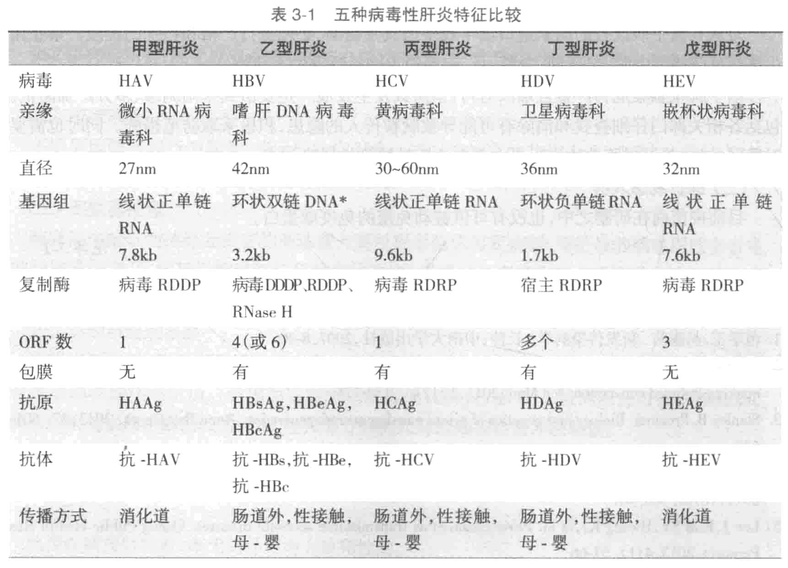
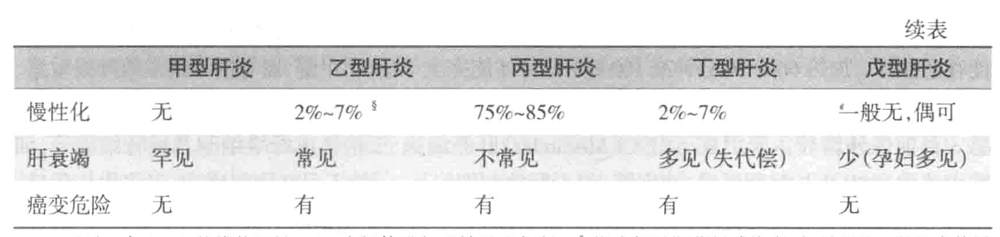
*通过一条3.5kb的线状正链RNA中间体进行反转录而复制。‘指成年时期获得感染者；如果系母-婴垂直传播或婴幼儿时期感染，则感染后的慢性化率很高。ORF：开放读码框。RDDP:RNA指导的DNA多聚酶。RDRP:RNA指导的RNA多聚酶。DDDP:DNA指导的DNA多聚酶。RNase H：核糖核酸酶H
甲型病毒性肝炎（viral hepatitis A，简称甲型肝炎）旧称流行性黄疸及传染性肝炎，早在8世纪就有记载。目前全世界约40亿人口受到该病毒威胁。近年对其病原学及诊断技术等方面的研究进展较大，并已成功地硏制岀甲型肝炎病毒减毒活疫苗及灭活疫苗，将有效控制甲型肝炎的流行。
HAV是1973年由 Feinstone等应用免疫电镜方法在急性肝炎患者的粪便中首次发现，1979年 Provost等用恒河猴肾（FRhk6）细胞首次成功分离出HAV，1983年 Ticehurst构建了HAV全基因组cDNA克隆。1983年国际病毒分类命名委员会（ICTV）曾将HAV归入小RNA病毒科（Picornaviridae）肠道病毒属72型，1993年更正为小RNA病毒科嗜肝病毒属（Heparnavirus，该属仅有HAV一个种。
HAV无包膜，直径27~32mm，为20面体对称颗粒，表面有32个亚单位结构（称为壳粒）。电子显微镜下可见有实心及空心两种颗粒，前者为完整的HAV，有传染性；后者为不含RNA的未成熟颗粒，有抗原性，但无传染性。HAV基因组为单股线状RNA，全长7487个核苷酸nt），由5-非编码区（5-NCR）或称5’-非翻译区（S5∵-NTR）编码区（开放读码框，open reading frame，ORF）及3’-非编码区（3ˆ-NCR）或称3-非翻译区（3-NTR）三部分组成（图3-1）。根据核苷酸序列的同源性，可将HAV分为7个基因型，其中Ⅰ、Ⅱ、Ⅲ、Ⅶ型来自人类，Ⅳ、V、Ⅵ型来自猿猴。目前研究否定了Ⅱ型的存在，故人类仅有Ⅰ、Ⅲ型，分别包括A、B两个亚型。其中我国已分离的HAV均为I型。在血清型方面，能感染人的血清型仅有1个，因此仅有一个抗原-抗体系统。
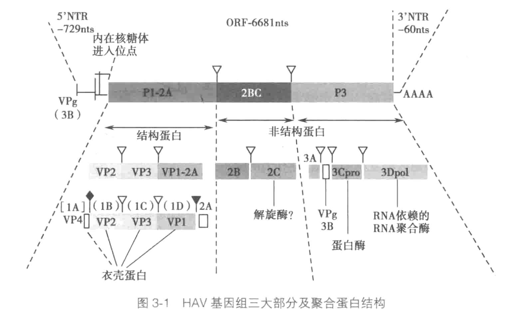
HAV对外界抵抗力较强，在-20~-70℃数年后仍有感染力，在甘油内-80℃可长期保存。对有机溶剂较为耐受，在4℃20%乙醚中放置24小时仍稳定。耐酸碱，尤其酸性环境下具有超高稳定性；室温下可存活1周，干粪中25℃能存活30日，在贝壳类动物、污水、淡水、海水、泥土中能存活数月。加热60℃30分钟或100℃1分钟才能完全灭活，对甲醛、氯等消毒剂及紫外线敏感。
众多哺乳动物尤其是灵长类，如黑猩猩、狨猴、狒狒、恒河猴、猕猴及短尾猴等均对HAV敏感。目前体外培养主要用亚历山大（Alexander）肝癌细胞、二倍体成纤维细胞及猴肾细胞等，细胞培养中HAV生长复制缓慢，滴度低，很少释放到细胞外，一般不引起细胞病变，经多次传代后，HAV的致病性大大减弱甚至消失，据此已制备出HAV减毒活疫苗。
甲型肝炎无病毒携带状态，传染源为急性期患者及隐性感染者，后者数量远较前者多。潜伏期后期及黄疸出现前数日传染性最强，黄疸出现后2周粪便传染性明显减弱。某些动物如长臂猿、黑猩猩等曾分离到HAV，但作为传染源意义不大。
主要经消化道传播，其中粪-口传播是主要途径，包括近年受到重视的男-男同性恋性活动方式。水源或食物严重污染亦可导致暴发流行，如上海1988年甲型肝炎暴发流行系由污染毛蚶所致。日常生活接触多引起散发性发病。输血后甲型肝炎极为罕见，但近年经注射吸毒方式传播报道日益增多。
抗-HAV阴性者对HAV普遍易感。6月龄以下的婴儿因有来自母体的抗-HAV而不易感6月龄以后，如未接种HAV疫苗，则抗-HAV逐渐消失而成为易感者。成人多因早年隐性感染而产生HAV中和性抗体，获得持久免疫力。我国甲型肝炎以学龄前儿童发病率最高，青年次之，20岁以后抗-HAV阳性率高达90%以上。发展中国家成人甲型肝炎发病率较高，如1988年上海甲型肝炎暴发流行时31万余人发病，20-39岁年龄组高达89.5%。然而发达国家近年来发病率亦有所增加。甲型肝炎病后免疫力持久。秋冬季发病率较高。
本病流行可追溯到17世纪。全年均可发病，温带地区秋冬季发病率较高，热带地区的发病高峰期不明显。甲型肝炎抗-HAV阳性率有三种不同的流行病学模式：模式A是发展中国家的典型模式，这些地区10岁以前儿童普遍接触HAV，因此成人的血清阳性率可达100%；模式B是大多数发达国家的典型模式，其儿童很少接触HAV，直到青年期前的血清阳性率增长缓慢，在老年人群达中高水平，发病率近似S型；模式C是非甲型肝炎流行区的典型模式（图3-2）。
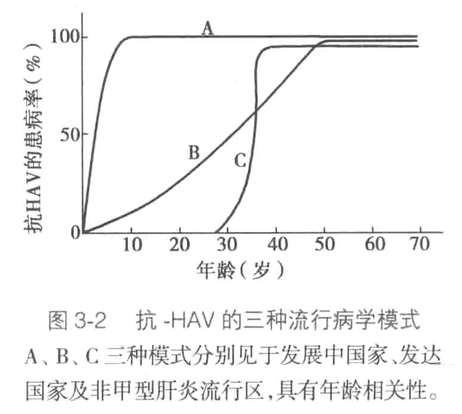
HAV感染可分为高度、中度、低度地方性流行区：
1. 高流行区 常为卫生条件差及卫生习惯不良的发展中国家，人群感染率高，一生中感染危险大于90%。大多数感染发生在儿童早期，受感染者并无任何明显症状。由于较大的儿童及成人绝大多数已产生免疫力，因此这些地区的发病率较低，鲜有大的疫情发生。
2. 中流行区 多为发展中国家、经济转型国家及卫生条件不定的地区，儿童在早期相对较少被感染，人群感染率相对较低。因此，这些地区若出现水源及食物污染等情况，可能发生较大规模的疫情暴发。
3. 低流行区 多为卫生条件及卫生习惯良好的发达国家。人群HAV感染率较低，且HAV疫苗接种率高，因此发病率不高。但注射吸毒者、男同性恋者、前往高危地区旅行的人、与世隔绝的群体（如封闭的宗教群体等）等高危人群，有可能发生甲型肝炎的暴发。
HAV经口进入体内后，由肠道进入血流，出现短暂病毒血症；随后进入肝细胞并在其中复制，约2周后由胆汁排出体外。病毒血症在潜伏期即已出现，而在临床症状出现时病毒血症已经很低或基本结束，但粪便排毒仍可持续1~2周。
HAV导致肝细胞损伤的机制尚未完全明了。一般认为，HAV并不直接引起细胞明显病变。在感染早期HAV缓慢增殖，使之在前几周不能诱导产生较高的免疫应答，故而肝细胞未岀现明显损伤或仅有轻微损伤。随着HAV复制髙峰期的到来，体内才出现明显的肝损伤。而当黄疸出现后，血液及粪便中的HAV均已显著减少甚至消失，同时出现抗-HAV。这些均提示HAV肝损伤与机体的免疫应答过程强烈相关。研究表明，甲型肝炎以细胞免疫性肝损伤为主，巨噬细胞、NK细胞、HLA-I限制性HAV特异性CD8+细胞毒性T淋巴细胞（CTL）等均参与甲型肝炎肝损伤的形成。特异性CIL可通过直接的细胞毒作用和分泌IFN-α等细胞因子以清除被感染的肝细胞内的HAV，同时导致肝细胞变性和坏死。此外，HAV感染动物的库普弗（Kupffer）细胞及脾内巨噬细胞胞质中的诱生型一氧化氮合成酶（inducible nitric oxide synthase，iNOS）表达增加且与肝细胞损害程度一致，表明一氧化氮可能参与了肝细胞损伤的形成。
本病病理特点是：①显著门管区周围肝实质坏死性炎症，除使肝小叶周边区肝细胞溶解坏死外，有时还呈“舌”样延伸到肝小叶中央区，这一变化极似慢性乙型肝炎（chronic hepatitis B，CHB）门管区周围碎屑样坏死；②肝小叶中央区淤胆现象较为常见，可能系因本病肝小叶中央区肝细胞病变很轻，形成胆汁的功能保存完好；③用免疫组化技术可在肝细胞质内观察到HAV颗粒；④上述肝脏病变呈可逆性，短时间内可完全恢复，不会慢性化。
甲型肝炎潜伏期为26周，平均4周。病程呈自限性，无慢性化病例。少数患者有复发现象，通常出现在首次发病后4-15周，但临床表现及肝脏生化异常相对较轻。复发可有多次，但一般不会转为慢性，其机制尚不清楚。总病程为1-4个月，偶可超过6个月，但未见有超过1年者。临床上分为以下类型：
1. 黄疸前期（前驱期） 急性起病，多有畏寒发热，体温38℃左右，全身乏力，食欲缺乏，厌油、恶心、呕吐，上腹部饱胀不适或轻泻，少数病例以上呼吸道感染症状为主要表现，偶见荨麻疹，继之尿色加深。本期一般持续5~7日。
2. 黄疸期 通常在热退后黄疸岀现，同时症状有所减轻。可见皮肤、巩膜不同程度黄染，肝区隐痛，肝脏肿大，触之有充实感，有叩痛及压痛，尿色进一步加深。黄疸出现后全身及消化道症状即减轻，否则可能发生重症化，但较为少见，且预后较佳。本期约持续2-6周。
3. 恢复期 黄疸消退，症状消失，肝脏逐渐回缩至正常，肝功能逐渐恢复。本期约持续2-4周。
此型特点是肝内胆汁淤积性黄疸持续较久，消化道症状轻，肝实质损害表现不明显，而黄疸很深，多有皮肤瘙痒及粪色变浅，预后良好。
此型很少见，如不及时进行肝移植，病死率较高。多见于40岁以上的患者。
起病较徐缓，除无黄疸外，其他临床表现与黄疸型相似，症状一般较轻。多在3个月内恢复。
部分患者无明显临床症状，但肝脏生化检查有轻度异常。
无明显症状和体征，肝脏生化检查基本正常，但血清抗-HAV IgM阳性，粪便可检出HAV颗粒。此型多见于儿童。
外周血白细胞总数正常或偏低，淋巴细胞相对增多，偶见异型淋巴细胞。黄疸前期末尿胆原及尿胆红素开始呈阳性反应，是早期诊断的重要依据。血清AL'于黄疸前期早期开始升高，血清ˆBi在黄疸前期末开始升髙。血凊ALˆ髙峰在血清TBi髙峰之前，一般在黄疸消退后1至数周恢复正常。急性黄疸型血清球蛋白常见轻度升高，但随病情恢复而逐渐下降。急性无黄疸型及亚临床型病例肝功能改变以单项ALT轻到中度升高为特点。急性淤胆型病例血清T.Bil显著升高而ALT仅轻度升高，同时伴有血清ALP及GGT明显升高。
目前临床上主要用酶联免疫吸附法（enzvme-linked immunosorbent assay，ELISA）检查血清lgM型甲型肝炎病毒抗体（抗-HAV IgM），以作为早期诊断甲型肝炎的特异性指标。血清抗-HAVlgG出现于病程恢复期，较为持久，甚至终生阳性，是获得免疫力的标志，一般用于流行病学调查。图3-3为HAV感染的典型血清学过程。新近报道应用线性多抗原肽包被进行 ELISA检测抗-HAV敏感性大大提高。
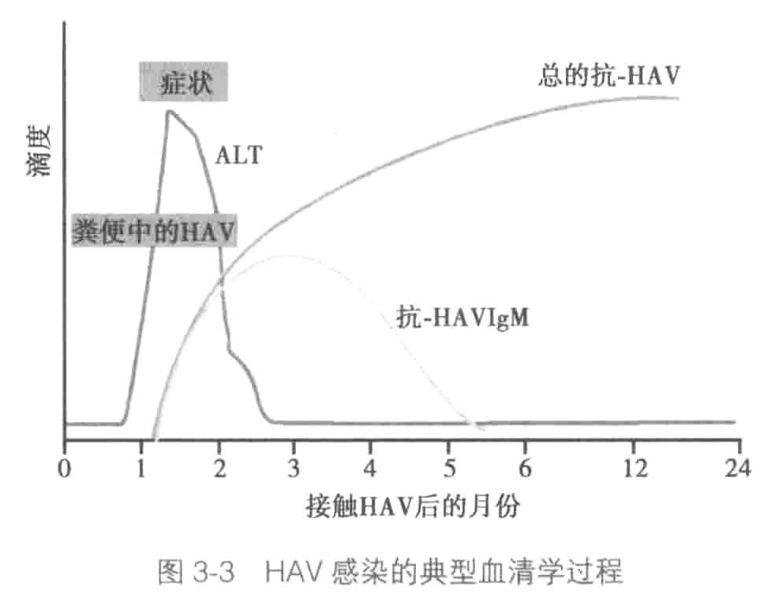
由于发病后HAV从粪便的排泄迅速减少，且一般实验室难以开展这些项目，故HAV颗粒及HAV抗原的检测般不用于甲型肝炎的临床诊断，仅用于科研。
主要依据流行病学资料、临床特点常规实验室检査及特异性血清学诊断。流行病学资料应参考当地甲型肝炎流行状况，发病前有无甲型肝炎患者密切接触史，以及饮食卫生情况。对于急性黄疸型病例，黄疸期诊断不难。在黄疸前期获得诊断称为早期诊断，此期表现似“感冒”或“急性胃肠炎”，如尿色变为深黄色是疑似本病的重要线索。可将本病早期特征总结为：“热退黄疸现，症状有所减”。急性无黄疸型及亚临床型病例不易早期发现，诊断主要依赖肝脏生化检査及特异性血清学检査。凡慢性肝炎及肝硬化，一般不考虑HAV感染。但需注意HAV与HBV等重叠感染的可能。
本病与非病毒性肝炎鉴别要点参见乙型肝炎的鉴别诊断部分。与乙型、丙型、丁型及戊型病毒性肝炎急性期鉴别除参考流行病学特点及输血史等资料外，主要依据血清抗 HAV IgM的检测。
本病尚无有效抗病毒疗法。以对症支持疗法为主，参见急性乙型肝炎治疗的相关部分。
早期发现传染源并予以隔离。隔离期自发病日算起共3周。患者隔离后对其居住、活动频繁地区尽早进行终末消毒。托幼机构发现甲型肝炎后，除患病儿童隔离治疗外，应对接触者进行医学观察45日。
提高个人及集体卫生水平，实行分餐制，养成餐前便后洗手习惯，共用餐具应消毒，加强水源、饮食、粪便管理。
对有甲型肝炎密切接触史的易感者，以人血丙种球蛋白进行预防注射可获短期保护效果，用量为002-0.05ml/kg，注射时间越早越好，不宜迟于接触后2周。因我国成人体内大多含有抗-HAV Igg，故从正常成人血提取的免疫球蛋白对预防HAV感染有一定效果。
1. 减毒活疫苗 长春生物制品研究所（LA-1减毒株）浙江省医学科学院及中国医学科学院医学生物学研究所（均为H2减毒株）均有生产，已在我国大规模使用。
2. 灭活疫苗 其特点是：①接种后抗HAV抗体阳转率为100%，且抗体水平较高；②根据数学模型推算，抗-HAV抗体至少可持续20年；③接种后不会在体内复制，故无“返祖”的可能性；④其保存时间较长，无需冷藏运输及保存；⑤价格相对较贵。
疫苗主要品种有：贺福立适（HAVRIX，单价疫苗，葛兰素史克公司）双福立适（Twinrix，甲型和乙型肝炎联合疫苗，葛兰素史克公司）维特抗（VAQTA，默沙东公司）巴维信（AVAXIM，赛诺菲-巴斯德公司）爱巴苏（Epaxal，微脂粒剂型，瑞士血清疫苗研究所）孩儿来福（单价疫苗）、倍尔来福（甲型和乙型肝炎联合疫苗）及维赛瑞安（中国医学科学院医学生物学研究所）上述疫苗的用法见表3-2。
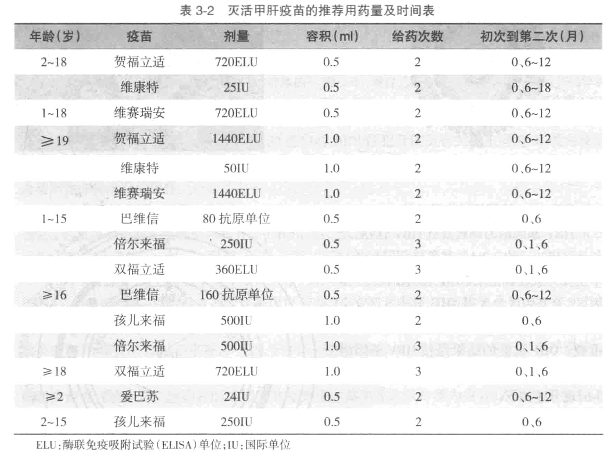
乙型病毒性肝炎（viral hepatitis B，简称乙型肝炎）旧称血清性肝炎。全球约20亿人感染过HBV，慢性HBV感染者达3亿-3.5亿人，其中20%~40%最终死于肝衰竭、肝硬化或肝癌，年病死人数约100万人；男女性患者的病死率分别约50%及15%。我国是乙型肝炎高发区，约6亿人感染过HBV，慢性HBV感染者达总人口的8%-10%。近年来在防治研究方面做了大量工作，但要控制本病，仍需继续付出巨大努力。
1965年 Blumberg等首次报道发现澳大利亚抗原（即 HBsAg），开启了乙型肝炎防治研究的划时代发展。1967年 Krugman等发现澳大利亚抗原与肝炎有关，故称其为肝炎相关抗原 hepatitis associated antigen，HAA），1972年世界卫生组织（WHO）将其命名为乙型肝炎表面抗原（hepatiti B surface antigen，HBsAg）1970年Dane等在电镜下发现HBV完整颗粒，称为Dane颗粒。1979年 Galibert测定了HBV全基因组序列。HBV为嗜肝DNA病毒科（Hepadnavirus）正嗜肝DNA病毒属（Orthohepadnavirus）该科还有另一个属为禽类嗜肝DNA病毒属（鸭子）的一员，该属其他成员包括土拨鼠肝炎病毒（woodchuck hepatitis vir WHV）及地松鼠肝炎病毒（ground squirrel hepatitis virus，GSHV）等。
在电镜下观察，HBV 感染者血清中存在三种形式的病毒相关颗粒：①小球形颗粒，直径约22m表面抗原横切面；②柱状颗粒（管状颗粒）表面抗原纵切面：直径约22nm，长度约100-1000nm。这两种颗粒均主要由 HBsAg组成，不含核酸无传染性；③大球形颗粒：亦称Dane颗粒，为HBV 完整的病毒体，直径42nm，脂蛋白包膜厚7mm，核心直径28m，内含核心蛋白（即乙型肝炎核心抗原，HBeAg）、部分环状双链 HBV DNA和HBVDNA多聚酶。血清中一般情况下小球形颗粒最多，Dane颗粒最少（图3-4、3-5）。
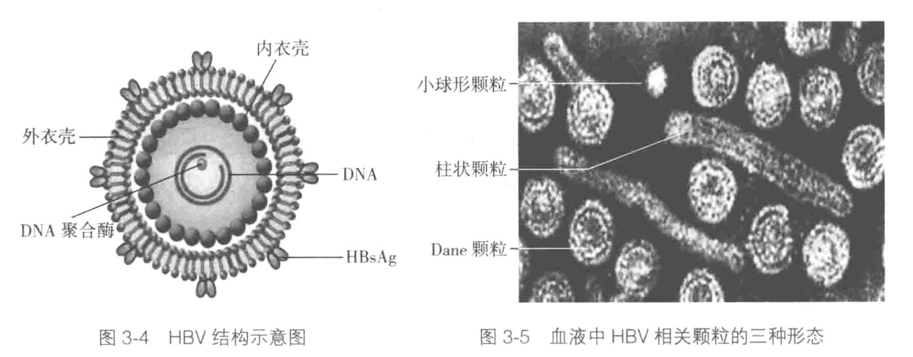
HBV 基因组为环状双链 HBV DNA，全长为3182bp（约3.2kh），其负链（长链）有4个主要开放性读框架（ORF:S基因区、C基因区、P基因区及X基因区，其中S区完全嵌合于P区内，C区、P区及X区部分相互重叠。ORF重叠的结果是使HBV基因组利用率高达150%。各ORF及其功能见图3-6，现分述如下：
1. S基因区 全长1167bp。由S基因、前S（preS1）基因及前S2（preS2）基因组成。S基因（678bp）编码含226个氨基酸的多肽，称为S蛋白、主蛋白或小表面抗原（SHBsAg）；前S2基因（165bp）编码含55个氨基酸的多肽，称为前S2蛋白；前S1基因（324bp）编码含108个氨基酸的多肽，称为前S1蛋白1167=678+165+324。前S2基因和S基因连续编码的多肽（含前S2蛋白和S蛋白）称为中蛋白或中表面抗原（MHBsAg）S+preS2=MHBsAg；S=SHBsAg；S+preS2+preS1=LHBsAg；前S1基因、前S2基因和S基因连续编码的多肽（含前S1蛋白、前S2蛋白和S蛋白）称为大蛋白或大表面抗原（LHBsAg）。鉴于主蛋白、中蛋白及大蛋白的称呼既不能反映其含义，又易相互混淆，现多以 SHBsAg、MHBsAg及 LHBsAG分别取而代之。S基因区上述各段编码产物均属于HBV包膜蛋白（HBsAg）范畴。
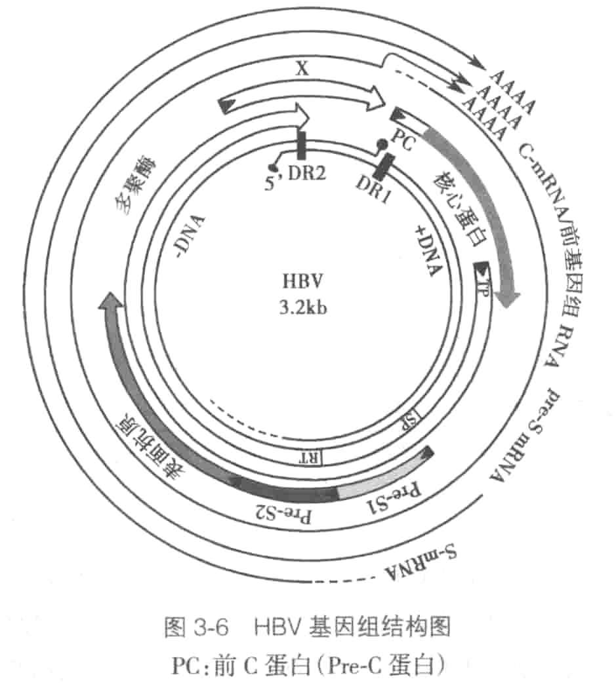
HBV 复制时HBsAg可出现于受感染肝细胞质、肝细胞膜及血液循环中。急、慢性HBV 感染患者血清HBsAg动态变化见图3-7、3-8。HBsAg如半年内不消失，则称慢性HBsAg携带者。HBsAg亦存在于许多体液及分泌物中，如唾液、乳汁及精液等。由于 HBsAg与Dane颗粒同时存在，可被认为具有传染性。然而，应注意HBV DNA可自X基因区终点起逆向发生整合，整合入肝细胞染色体中的HBV DNA片断主要是X基因和S基因。肝细胞DNA复制时，其内的X基因表达较弱，S基因表达较强，故不断产生HBsAg。在这种特定情况下，即使HBV复制停止或从体内完全清除，血清HBsAg仍可长期阳性。
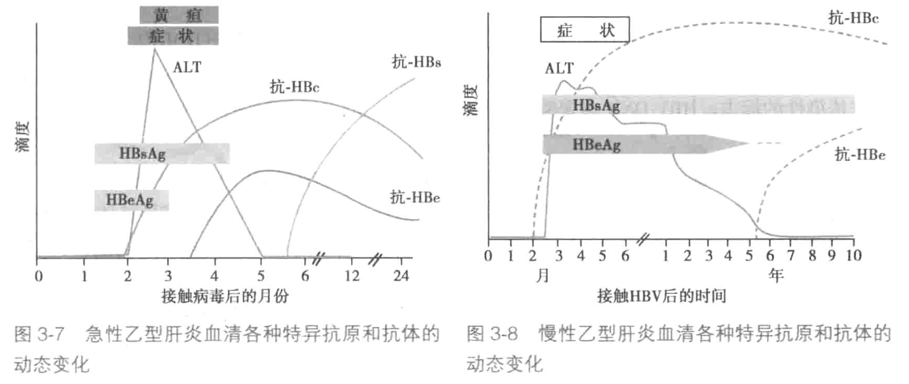
HBV包膜蛋白中的前S1蛋白和前S2蛋白与HBV侵犯肝细胞有关。血清前S1蛋白及前S2蛋白出现较早，是传染性标志。MHBsAg含前S2蛋白，LHBsAg含前S1蛋白及前S2蛋白，其血清阳性亦提示有传染性。
HBsAg共分10个血清亚型：ayw1、ayw2、ayw3、ayw4、ayr、adw2、adw4、adr，adw及adyr。共同表位a的抗体对不同亚型感染均具有保护作用，但交叉免疫不完全。我国长江以北地区以adr占优势，长江以南地区adr和adw混存，新疆、西藏、内蒙古当地民族几乎均为ayw2、ayw3和ayw4。
HBV基因型的命名系基于整个基因组序列的差异，因而比血清学亚型命名法更加可靠。根据HBV全基因序列差异≥8%或S区基因序列差异≥4%，目前将HBV主要分为A- I 等9个基因型，个别文献报道还存在所谓J型HBV。各基因型又可分为若干基因亚型。A型主要见于北欧及非洲，B型及C型见于东亚，D型见于中东、北非及南欧，E型见于非洲，F型仅见于南美，G和H型分布尚不明确，I型主要见于我国广西及东南亚的缅甸等地区，J型仅在日本有个别报道。据初步调查，我国HBV感染者以C型及B型为主。其中北方以C型为主，南方以B型为主，部分地区两者大致相当。慢性乙型肝炎患者对IFN-α治疗的应答率，基因型A高于基因型B、C、D，基因型B高于基因型C、D。此外，据报道肝硬化以C/B混合型较为常见，与无症状携带者的基因型相比有差异，提示不同型的混合感染与炎症及重症化相关。目前认为，HBV基因型一般不影响核苷（酸）类似物（nucleoside/nucleotide analogues，NUCs）的疗效。
急性HBV感染者血清 HBsAg转阴与特异性抗-HBs转阳之间相隔数周，此间血清中既测不出 HBsAg，亦测不出抗HBs，称为“窗口期”或“空白期”。此期 HBsAg及抗HBs实际以免疫复合物形式存在于血液循环内。抗-HBs为保护性抗体，通常是HBV感染终止及获得免疫力的标志。血清前S1蛋白及前S2蛋白的特异抗体（抗-前S1和抗-前S2）出现时间早于抗-HBs，亦为HBV复制减弱或将被清除的标志。
2. C基因区 由前C基因和C基因组成。前C基因编码的多肽称为功能性信号肽 function signal peptide）。C基因（549bp）编码核心蛋白（即 HBcAg）稳定病毒结构。前C基因起始密码子启动前C基因和C基因连续编码乙型肝炎e抗原（HBeAg）前体蛋白，在内质网中将其氨基端及羧基端部分水解，即形成 HBeAg可溶性，释放入血反应病毒复制活跃程度。
HBV复制时 HBeAg在肝细胞的分布有胞质型及胞膜型。未行抗HBV治疗时，HBeAg阳性表示HBV复制活跃，是传染性强的标志。当经过抗病毒治疗或机体产生对HBV的免疫清除作用时，HBV DNA水平逐渐降低直至检测不出，HBeAg滴度逐渐降低至消失，抗-HBe出现，从而发生 HBeAg/抗-HBe血清学转换，表示HBV复制减弱，传染性降低。但也有部分患者在 HBeAg转阴后，HBV DNA复制仍很活跃，具有传染性，肝脏炎症活动度仍很高，这类患者称为 HBeAg阴性CHB，其 HBeAg阴性并非由于机体的免疫清除，而是由于前C区或基本核心启动子（BCP）基因突变等因素所致。
3. P基因区 编码 HBV DNA多聚酶，具有DNA依赖的DNA多聚酶（DDDP）、RNA依赖的DNA多聚酶（RDDP，即反转录酶）及RNA酶H活性。血清 HBV DNA多聚酶阳性是HBV复制及有传染性的标志。HBV DNA多聚酶缺乏校对（proofreading）功能，是 HBV DNA易于发生变异的重要原因之一抗病毒作用靶点。
4. X基因区 编码乙型肝炎X抗原（HBxAg）HBV复制时 HBxAg在肝细胞的分布与HBeAg相似。血清 HBxAg亦是HBV复制和有传染性的标志。血清 HBxAg及其特异抗体抗HBx的动态变化与 HBeAg及抗-HBe大体一致。HBxAg有反式激活（trans-activation）功能，可激活肝细胞基因组内的原癌基因（oncogene），促使肝细胞癌变，故与原发性肝癌的发生有关。血清抗-HBx阳性一般提示HBV复制减弱。约2%的隐匿性肝炎系因Ⅹ基因变异所致。gene unknown，与原发性肝癌有关
HBV基因组虽为环状双链DNA，但其复制过程很特殊。正链（短链）在DDDP的作用下，先延伸补齐缺口，形成共价闭合环状DNA（covalently closed circular dna，cccDNA）。再以 CccDNA为模板，在宿主肝细胞转录酶即DNA依赖的RNA多聚酶（DDRP）的作用下，转录成复制中间体（又称前基因组RNA，是 HBV mRNA）；再以前基因组RNA为模板，在RDDP作用下反转录合成子代负链DNA。前基因组RNA模板即被病毒RNA酶H降解。然后在病毒DDP作用下以子代负链DNA为模板合成子代正链DNA。该双链DNA部分环化，即完成HBV基因组复制。HBV复制时，HBVDNA可出现于肝细胞和血清中。存在于肝细胞及血清中的游离型 HBV DNA是HBV复制和传染性强的标志。HBV在肝细胞中的复制周期见图3-9。
在持续感染时，并非所有的病毒核心颗粒均能被包装及释放。部分核心颗粒亦叮通过细胞内转换途径（intracellular conversion pathway，P）进入细胞核，补充cDNA储存池。故而，新复制的基因组DNA就扩增了 cccDNA池，亦即在细胞内建立了一个转录模板（cDNA）池。因此，核心颗粒在把成熟病毒基因组转送到感染的细胞核的过程中扮演了重要角色，使持续感染肝细胞胞核内的 HBV DNA不断得到补充及扩增，维持了病毒持续感染所需要的病毒微染色体池（viral minichromosome）。这条途径的调节十分复杂，迄今知之甚少。但可以肯定的是，持续稳定的 CccDNA是长期维持HBV慢性感染的关键因素，亦是难以通过抗病毒治疗清除病毒的主要原因。据研究，在外周血 HBV DNA清除及 HBeAg甚至 HBsAg清除后，cccDNA仍可持续存在于肝细胞内达14.5年之久。
过去认为HBV为专一的嗜肝病毒。近年由于核酸分子杂交技术的发展，在肝外器官细胞内不断检出 HBV DNA。这些肝外器官或细胞包括外周血单个核细胞特别是B淋巴细胞和单核吞噬细胞λ脾、肾、胰、骨髓、脑、淋巴结、睾丸、卵巢、肾上腺及皮肤等。一般认为外周血单个核细胞内潜伏的HBV是原位肝移植后HBV再感染的主要来源。
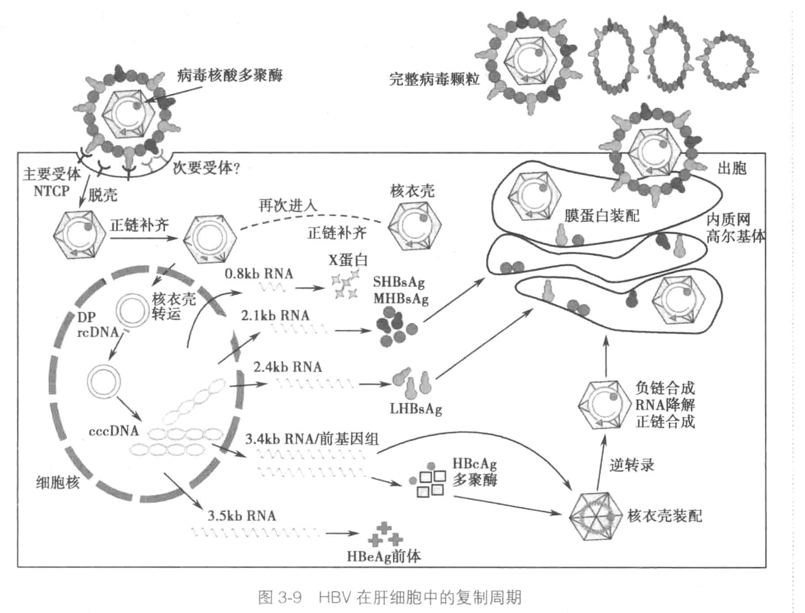
主要受体：sodium taurocholate cotransporting polypeptide（NTCP）钠离子牛磺胆酸钠共转运多肽
病毒rDNA正链补齐过程在核衣壳中由病毒核酸多聚酶完成.随后触发核衣壳结构改变并转运至细胞核中cDNA：共价闭合环状DNA；SHBsAg：小HBV表面抗原；MHBsAg：中表面抗原；HBSaG：大表面抗原
准种（quasIspecies）指存在于同一宿主、相互关联而各不相同的病毒株。HBV基因的突变可产生遗传学上高度相关、基因序列有微小差别（<2%~5%）的HBV毒株群，即准种。乙型肝炎患者体内病毒群由异质性（heterogeneity）的HBV毒株组成，且病毒群的构成处于不断变化之中。准种检测的经典方法有直接测序、单链构象多态性分析（single strand conformation polymorphism，SSCP）、异源性双链泳动分析（heteroduplex mobility assay，HDA或HMA）、SSCP/HDA、构象敏感凝胶电泳（CSGE）、基于毛细管电泳的HMA等，点突变则多采用线性探针反向杂交法（INNO-LiPA）及限制性断片长度多态（restriction fragment length polymorphism，RFLP）等。
新近研究证实，HBV在肝细胞内的更新很快，其半衰期为4小时；加上DNA多聚酶缺乏校对功能，极易发生病毒变异；另一方面，宿主因素及外源性选择性压力均可导致HBV变异，从而决定了HBV优势株的构成。外源性压力包括应用NUCs、IFN-α、乙型肝炎免疫球蛋白（hepatitis B immunoglobulin，HBlG）及疫苗等。常见变异包括：
1. 基本核心启动子（BCP）、前C区及核心区基因的变异 前C区及BCP的变异可产生HBeag阴性变异株。前C区最常见变异为G1896A点突变，形成终止密码子（TAG），不能表达 HBeAg。BCP区最常见变异是A1762T/G1764A联合点突变，可选择性抑制前 C mRNA转录，可导致 HBeAg产量减少70%。C基因较常见的变异包括L60V、S87G、197L等变异。其中，197L变异相对多见，且与病变进展有关。此外，C基因中段还可以发生缺失变异，虽然仍能产生HBcAg，但可降低HBV的复制。前CC区变异是形成 HBeAg阴性CHB的主要原因。
2. S基因区的变异 在疫苗诱导的抗体压力下，可出现 HBsAg第126、129、145等部位的氨基酸发生变异，引起免疫逃逸。中国台湾省研究发现，在 HBV DNA阳性儿童中，HBsAg“a”表位变异率达到28.1%。这种HBV免疫逃避变异株可逃避乙型肝炎疫苗诱生的表面抗体的结合，发生HBV突破性感染（breakthrough infection），提示新的乙型肝炎疫苗应包括野毒株及变异株的S蛋白。不过，目前认为，HBV逃逸变异株尚不足以对现行乙型肝炎疫苗接种计划构成威胁。S基因变异还是导致隐匿性HBV感染（occult hbv infection）的原因之一，表现为血清 HBsAg阴性但仍可有HBV低水平复制血清 HBV DNA常<200IU/ml）。然而，此型发病率各家报道多寡不一。
近年来发现，HBG可诱生HBVS基因变异株，S基因第20、44、114.130、145、184和188位氨基酸等多处可发生变异。S基因变异除了影响主动免疫效果外，也会影响HBG的被动免疫效果。
3. HBV反转录酶（RT）区变异 最具临床意义的变异是在NUCs长期治疗过程中出现的耐药相关性变异，这种变异原已有之是在NUCs作用下被选择出来的，并可逐渐成为优势株，导致耐药性产生。如拉米夫定（lamivudine，LAM）耐药相关性变异为tM204s变异，可伴或不伴有l80M变异或rV173L等增强HBV复制功能的补偿变异。与LAM同属左旋核苷的替比夫定（telbivudine，LT）耐药相关变异与LAM相似，主要为rM204，故二者具有交叉耐药性。阿德福韦酯（adefovir，ADV）耐药相关性变异为rN236T或rA18TNs变异，或两者联合变异。恩替卡韦（entecavir，ETV）耐药变异是在tM204I/V+rtL180M变异基础上出现rtA184、rts202或rtM250变异中的一种。
HBV对黑猩猩易感，恒河猴及树鼩亦可受染，但难以传代，病毒体外培养尚未成功。HBV在外界抵抗力很强，能耐60°C 4小时高温及一般浓度的消毒剂。煮沸10分钟、高压蒸汽消毒及2%过氧乙酸浸泡2分钟均可灭活。
主要是有HBV DNA复制的急、慢性患者及无症状慢性HBV携带者。
主要通过血液、日常密切接触及性接触而传播。血液传播途径除输血及血制品外，诸如注射、刺伤、共用牙刷剃刀及外科器械等方式经微量血液亦可传播。所谓“密切生活接触”与性传播一样，可能是因微小创伤所致的一种特殊经血传播形式，而非消化道或呼吸道传播。另一种重要传播方式是母-婴传播（垂直传播）。生于 HBsAg/HBeAg阳性母亲的婴儿，HBV感染率高达95%，大部分在分娩过程中感染，约5%-15%可能系宫内感染。对于昆虫传播曾怀疑通过蚊虫传染的可能，但近年通过HV传播的研究发现，蚊子叮咬时吸血与注入实系互不相通的两个部分，故已否定了此种传播途径。因此，医源性或非医源性经血传播，仍为本病的主要传播途径。
人群普遍易感，但不同年龄获得感染者，其获得持久免疫力的几率不同。宫内感染、围生期感染及婴幼儿时期获得感染者，多难以获得保护性免疫，从而成为慢性HBV感染者；青少年时期获得感染者，其获得保护性免疫的几率相对增加；而成人时期获得感染者，约9%-95%可获得持久保护性免疫。感染后的保护性免疫（抗-HBs）主要是针对同一 HBsAg亚型，而对其他亚型的免疫力不完全，因此有少数患者可再感染其他亚型，此时血清抗-HBs（某一亚型感染后）及HBsAg（另一亚型再感染）可同时阳性。疫苗接种后出现抗-HBs者有免疫力。
本病广泛分布于世界各地，一般呈散发，无明显季节性。发展中国家发病率较高。我国是乙型肝炎高发区之一。根据2006年全国血清流行病学调查显示，我国 HBsAg阳性率为7.18%。地区分布为农村高于城市，南方高于北方。性别为男性多于女性。
迄今对非活动或低（非）复制期慢性HBV感染者自然史的研究尚不充分，但有资料表明，这些患者可有肝炎反复发作。对一项684例CHB的前瞻性研究表明，CHB患者发展为肝硬化的估计年发生率为21%。另一项对 HBeAg阴性CHB进行平均9年（1-18.4年）随访，进展为肝硬化及肝细胞癌（hepatocellular carcinoma，HCC）的发生率分别为23%和44%。发生肝硬化的高危因素包括病毒载量高、HBeag持续阳性、ALT水平高或反复波动、嗜酒，以及合并HCV、HDV或HIV感染等HBeag阳性患者的肝硬化发生率高于 HBeAg阴性者，但亦有不同报道。与HBV感染相关的临床术语及其定义见表3-3。HBV复制状态与CHB感染转归及感染自然史分别见图3-10和图3-11。
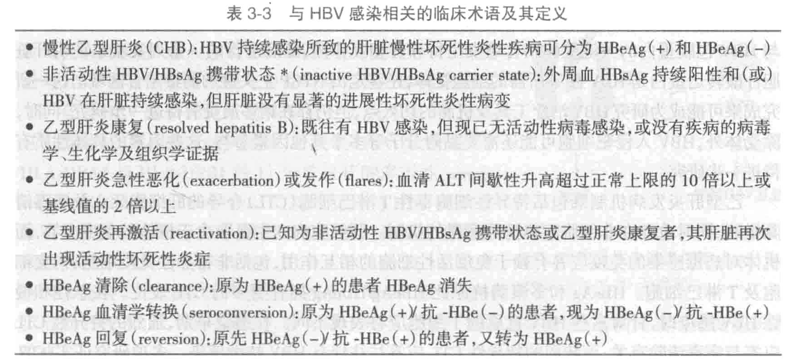
*两种携带者本有明显差异，但将其放在一起的理由是：①临床实际中难以将二者区别开来；②过多使用“HBV携带状态”命名易发生社会歧视或心理恐慌；③过多使用“HBsAg携带状态”命名则易忽视对HBV再激活的潜在危险。因此，应当在临床实际中区别对待。
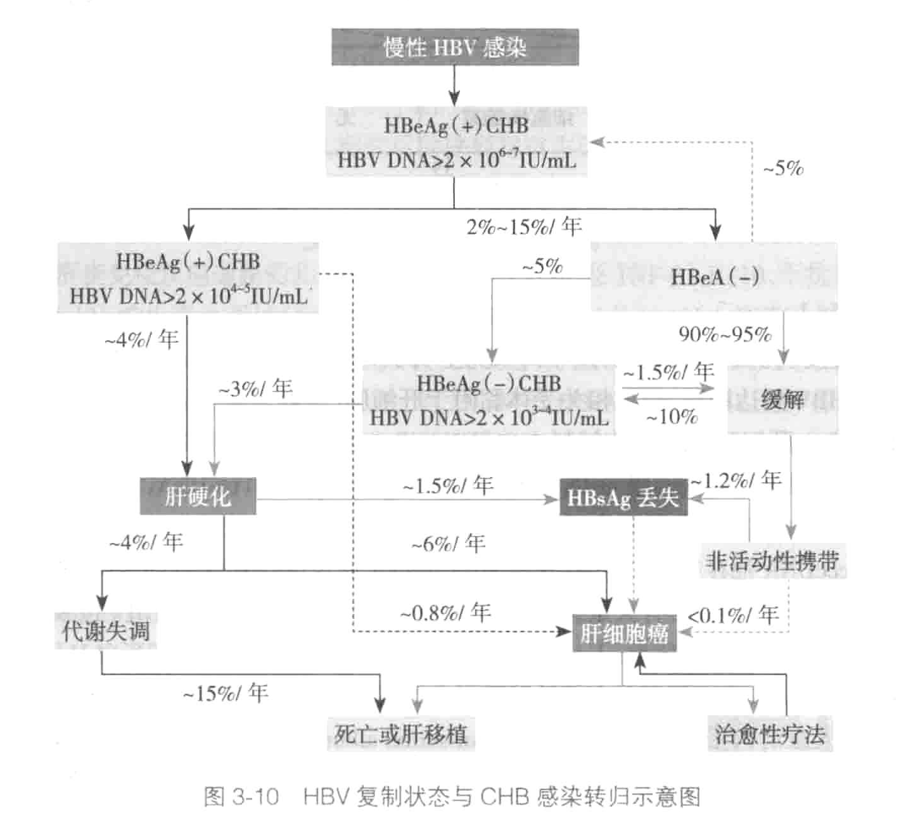
乙型肝炎发病机制极为复杂，迄今尚未完全明了。HBV侵入人体后，未被单核-巨噬细胞系统清除的HBⅤ到达肝脏，通过相关受体黏附于肝细胞，病毒包膜与肝细胞膜融合，导致病毒侵入。HBV进入肝细胞后即开始复制，HBV DNA进入细胞核形成 cccDNA，以 cccDNA为模板合成前基因组mRNA，前基因组mRNA进入胞质作为模板合成负链DNA，再以负链DNA为模板合成正链DNA，两者形成完整的双链HBⅤDNA。HBV的复制过程非常特殊，其一是细胞核内有稳定的 cccDNA池存在，其二是存在从 HBV mRNA反转录为HBⅤDNA的步骤。
经过近30年的研究，已有大量关于HBⅤ候选受体的报道。根据与HBV包膜结合位置的不同，将这些候选受体大致分为：①与S区结合的候选受体蛋白，包括载脂蛋白H（apoH）人膜联蛋白V（annexin V）及硫氧还蛋白相关跨膜蛋白2（TMX2）等；②与前S2区结合的候选受体蛋白，包括多聚人血清白蛋白（polymerized human serum albumin，pHSA）及可溶性糖蛋白HBV-BF（HBV binding factor）等；③与前Sl区结合的候选受体蛋白，包括IgA受体及6等；④亦有报道提示人源性唾液酸糖蛋白受体、转铁蛋白受体及Tol样受体（Tol-clike receptor）等分子与HBV入侵靶细胞相关。新近，国内研究发现，肝脏胆汁酸转运体——牛磺胆酸钠共转运多肽（NTCP）与HBV包膜蛋白的关键受体结合域发生特异性相互作用，随后进行的一系列实验也证明肝脏胆汁酸转运蛋白是HBV感染所需的细胞受体，还鉴定出NTCP上关键的病毒结合区域。这一研究成果可能成为研究HBV治疗工具及机制的切入点，但仍存在诸多质疑有待进一步研究。同时，除受体外，HBV入侵靶细胞可能还需要黏附分子等多个其他因素参与，这些因素的具体性质有待进一步研究。
乙型肝炎发病机制既包括特异性细胞毒性T淋巴细胞（CTL）介导的肝细胞死亡及病毒清除机制，同时也存在非细胞溶解清除病毒的机制。肝细胞病变主要取决于机体的免疫应答，而机体对病毒感染的免疫应答有赖于免疫活性细胞的相互作用，包括非特异性免疫细胞、树突细胞及T淋巴细胞。HBsAg和多聚酶抗原比 HBcAg/HBeAg拥有更多的CTL表位。在急性和慢性HBV感染时，针对这些HBⅤ抗原的T细胞应答表现不同。在感染早期，强烈的特异性CTL应答与病毒清除有关；而较弱的特异性CTL应答往往伴有HBⅤ持续感染。多项研究证实，CTL及抗-HBe和抗-HBe可抑制CTL活性，但其机制仍不清楚。此外，研究还发现，干扰抗包膜抗体的产生可导致HBⅤ持续感染，丙种球蛋白缺乏症患者接触HBV后亦会发展成HBV慢性感染。MyD88是病毒通过TLR激活天然免疫反应的信号转导分子，病毒通过抑制MyD88的表达，可导致HBⅤ持续感染。
当机体处于免疫耐受状态，如围生期获得HBV感染，由于小儿免疫系统尚未发育成熟，不产生免疫应答，因而多为无症状携带者。当机体免疫功能正常时，多表现为急性肝炎经过，成人感染HBⅤV者多属于这种情况，大部分患者可彻底清除HBV而痊愈。当机体免疫反应不足，或反应不当（包括不完全免疫耐受、自身免疫反应、HBV基因突变逃避免疫清除等情况），可导致慢性肝炎。当机体处于超敏反应，大量抗原-抗体复合物产生并激活补体系统，以及在内毒素、肿瘤坏死因子（tumor necrosis factor，TNF）、I-1、I6、趋化因子和细胞间黏附分子（ICAM-1）等的参与下，导致大片肝细胞坏死，发生重型肝炎。
研究发现，如不采取积极预防措施，几乎每位 HBeAg阳性母亲所生孩子均可感染HBV，且90%发展为慢性携带者。目前已证明 HBeAg能通过胎盘，且能减弱CTL应答。对于垂直感染者在生命的某些阶段，特别是青壮年时，对病毒的耐受可能被打破，其主要原因可能有：①反转录酶缺陷导致病毒表位发生随机突变，突变后的序列与宿主已耐受的原序列有很大差别；②HBV和急性溶菌病毒共同感染，这样可能激活HBV抗原周围的危险信号使T细胞反应激活；③宿主遗传学，包括不同基因型及准种变异通过激活宿主免疫应答致使病毒耐受被打破，目前主要针对涉及乙型肝炎免疫反应通路的几个基因，如TNF（TNF-a及TNF-B）、Ⅱ-10、干扰素诱生蛋白10（IP-10、CXCL-10）、维生素D受体（VDR）、人白细胞抗原（HLA）及ICAM-1等基因。
在临床上，慢性HBⅤ感染者常岀现获得性免疫进行性下降，表明失败的免疫应答与持续暴露于大量的可溶性 HBeAg和颗粒型 HBsAg有关。对于 HBeag阴性HBV变异株，有研究发现，HBV前C区变异的患者进行肝移植后，如长期接受免疫抑制治疗，因缺乏免疫选择压力，患者可出现野生型HBV再次感染。此外，HBeAg阴性母亲所生孩子感染HBV后均显示 HBeAg阳性，亦证明野生型HBⅤ具有传播优势。研究还发现，慢性感染者 HBV DNA可共价整合至肝细胞基因组内。与短期HBⅤ慢性感染且无病毒整合的患者相比，有多年HBⅤ慢性感染且发生病毒整合的患者更不易清除HBsAg。
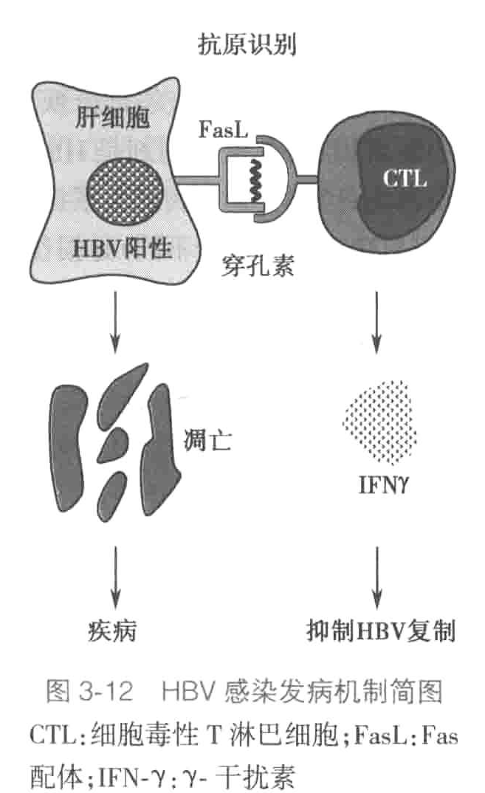
HBV感染发病机制简图及HBV感染的免疫应答过程见图3-12及图3-13。
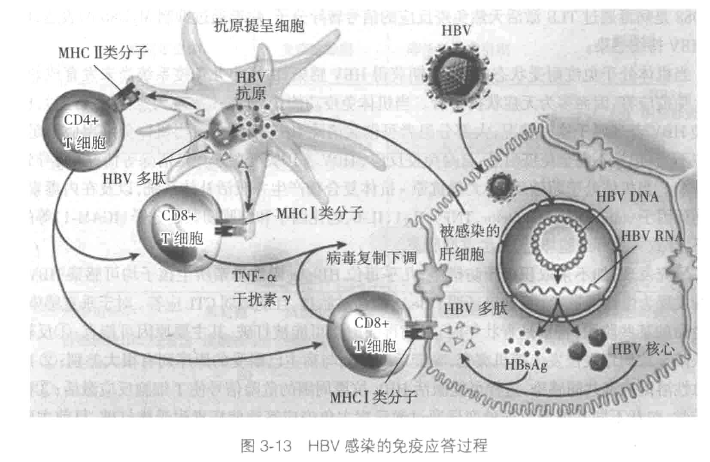
HBV感染后的免疫学应答是控制HBV感染的主要因素，不同的免疫学应答导致预后不同，而免疫学应答的不同与免疫遗传学差异密切相关。部分人群接种乙型肝炎疫苗后无应答，而部分成人感染HBV后发展为慢性肝炎，均可能与HBV特异性免疫识别与免疫应答相关的基因缺陷有关。有关HBV感染的免疫遗传学研究方兴未艾，研究热点主要是HBV易感或拮抗基因，已发现HLA-DP位点，即HLA-DPA1与 HLA-DPB1的11个单核苷酸多态性（single nucleotide polymorphism，SNP）的基因变异与HBⅤ持续感染明显相关。近年还发现，涉及乙型肝炎免疫反应通路的基因，如TNF-a、TNF-B、I-10、P10、CXCL10及VDR，其基因多态性与乙型肝炎严重程度相关。今后，如能进一步借助HIⅤ和HCⅤ相关研究，将有助于阐明乙型肝炎的发病机制，进而为其治疗提供新的策略。
因各种原因进行免疫抑制和（或）抗排斥治疗时，免疫抑制剂的应用可增加病毒复制，从而导致HBV复制再活化。其可能机制有：①肾上腺皮质激素能直接作用于HBV基因组中的皮质激素效应元件，促进HBⅤ转录，导致病毒复制增强；②一些临床应用的抗淋巴细胞单克隆抗体，不论单用或联合细胞毒药物均可引起HBV再活化，提高血清 HBV DNA和 HBsAg的表达量；③体外实验显示单独使用泼尼松和硫唑嘌呤可分别使细胞内病毒DNA和RNA水平上升2倍和4倍，其联合使用则有协同作用；④术后免疫抑制剂的应用，抑制了受体病毒特异性细胞免疫反应，导致机体内野生株病毒大量复制；⑤有报道认为，肾上腺皮质激素可刺激肝外组织释放HBV，释出的HBⅤ在低水平被重新激活而再次表达。对于各种恶性肿瘤患者，其HBV再活化和肝炎发作往往岀现于化疗结束后，这可能系因化疗抑制免疫系统使病毒复制，而化疗停止后机体对HBV的免疫应答部分恢复，从而导致严重的肝损害。据此提出HBV再激活相关肝衰竭的新认识：①免疫抑制剂是HBV再激活的强诱导因素；②任一HBV标志物（HBVM）阳性的感染者均可发生；③本病发生系病毒直接致病机制，大量病毒复制导致肝细胞营养耗竭；④免疫麻痹（与免疫耐受完全不同）是损伤前提；⑤强调预防为主，应放宽NUCs适应证（HBV感染标志物阳性即可）。
基本病理变化包括肝细胞变性、坏死及凋亡，炎细胞浸润，肝细胞再生，Kupffer细胞、小胆管及纤维组织增生。坏死区浸润的淋巴细胞以CD8*细胞居多。
急性黄疸型和急性无黄疸型肝炎的肝脏病变只是程度的差别，唯前者可出现肝内淤胆现象。主要病变包括：①急性肝细胞病变：包括肝细胞质疏松及气球样变，肝细胞嗜酸性变及凋亡小体（apoptotic body），点状溶解性肝细胞坏死及灶性坏死。由于肝细胞肿胀，使肝索显著拥挤迂曲；②肝小叶急性炎症反应：肝窦、Diss间隙及肝索间炎细胞浸润呈弥漫性分布，肝实质坏死灶炎细胞浸润呈集中分布，浸润细胞主要是淋巴细胞，其次是单核细胞及浆细胞；③可见双核细胞等肝细胞再生现象及 Kupffer细胞增多；④上述病变呈弥漫性，涉及整个肝小叶，但肝小叶结构完整；⑤门管区炎症反应较轻。
本型特点是：①肝细胞变性坏死较轻；②肝细胞质及毛细胆管内明显淤胆：③肝细胞排列呈腺状结构；④门管区小胆管增生明显；⑤急性型早期炎细胞浸润可见较多的嗜中性粒细胞；慢性型仍以淋巴细胞浸润为主，且伴慢性肝炎的组织学特点。
1. 基本病变 小叶内除有不同程度肝细胞变性及坏死，门管区及门管区周围炎症常较明显，常伴有不同程度的纤维化，主要病变为炎症坏死及纤维化。
（1）炎症坏死常见有点状坏死、灶状坏死、融合坏死、碎屑样坏死及桥接样坏死，后两者与预后关系密切，是判断炎症活动度的重要形态学指标。
1）碎屑样坏死（piecemeal necrosis，PN）：又称界面性肝炎（interface hepatitis）.系肝实质及门管区或间隔交界带的炎症坏死，特点为单个核细胞浸润，交界带肝细胞坏死，肝星状细胞增生，可致局部胶原沉积及纤维化。曾按碎屑样坏死的有无分成慢性活动性肝炎（CAH及慢性迁延性肝炎（CPH），以后发现碎屑样坏死广泛存在，并非CAH特有，故依病变程度分为轻、中及重度，作为判定小叶炎症活动度的重要指标之一：①轻度：发生于部分门管区，界板破坏范围小，界面肝炎局限；②中度：大部分门管区受累，界板破坏可达50%，界面肝炎明显；③重度：炎症致门管区扩大，PN广泛。炎症坏死深达小叶中带，致小叶边界严重参差不齐，可致门管区周围广泛胶原沉积。
2）桥接样坏死（bridging necrosis，BN：为较广泛的融合坏死，根据坏死连接部位不同分3类①门管区-门管区（PPBN：主要由门管区炎症及PN发展形成；②门管区-小叶中央（PC那BN沿肝腺泡3区小叶中央与门管区炎症及坏死互相融合，常致小叶结构破坏；③中央-中央（C-C）BN：两个小叶中心带的坏死相融合。BN常导致桥接样纤维化，与预后密切相关。BN的多少是诊断中、重度慢性肝炎的重要依据之一。
（2）纤维化指肝内有过多胶原沉积，依其对肝结构破坏范围、程度和对肝微循环影响的大小划分为1~4期（S1-S4）：①S1期：包括门管区、门管区周围纤维化及局限窦周纤维化或小叶内纤维瘢痕，两者均不影响小叶结构的完整性；②S2期：纤维间隔即桥接样纤维化（bridging fibrosis），主要由桥接样坏死发展而来，S2虽有纤维间隔形成，但小叶结构大部分仍保留；③sS3期：大量纤维间隔，分隔并破坏肝小叶，致小叶结构紊乱，但尚无肝硬化。此期一部分患者可出现门静脉高压及食管静脉曲张；④s4期：早期肝硬化，肝实质广泛破坏，弥漫性纤维增生，被分隔的肝细胞团呈不同程度的再生及假小叶形成。此期炎症往往仍在进行，纤维间隔宽大疏松，改建尚不充分，这与典型肝硬化不同。在典型肝硬化，纤维间隔包绕于假小叶周围，间隔内胶原及弹力纤维已经改建，多环绕假小叶呈平行排列。
2.慢性肝炎病变的分级、分期（表3-4）。
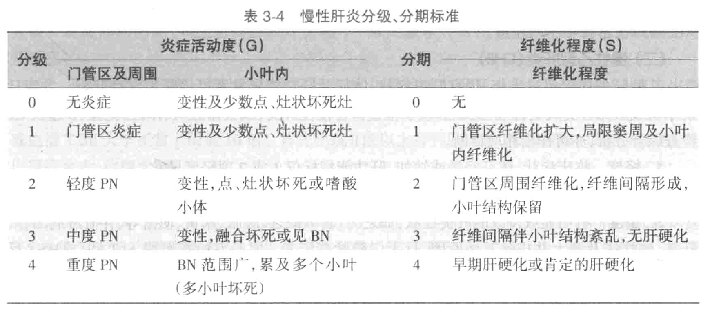
3.慢性肝炎程度划分慢性肝炎按活动度（G）可分为轻、中、重三度。如S>G，则特别标明。
（1）轻度慢性肝炎包括CPH、慢性小叶性肝炎及轻型CAH，表现为Gl~G2及S0~S2：①肝细胞变性，点、灶状坏死或凋亡小体；②门管区有（无）炎症细胞浸润、扩大，有或无局限性碎屑样坏死（界面坏死）；③小叶结构完整。
（2）中度慢性肝炎相当于原中度CAH，表现为G3及S2~S3：①门管区炎症明显，伴中度碎屑样坏死；②小叶内炎症严重，融合坏死或伴有少数桥接样坏死；③纤维间隔形成，小叶结构大部分保存。
（3）重度慢性肝炎相当于原重型CAH，表现为G4及S3~S4：①门管区炎症严重或伴重度碎屑样坏死；②桥接样坏死范围广泛，累及多数小叶；③大量纤维间隔，小叶结构紊乱，或形成早期肝硬化。
1. 急性重型肝炎 肝细胞呈一次性坏死，坏死面积>肝实质的23，或亚大块坏死，或桥接样坏死，伴存活肝细胞重度变性；坏死>2/3者，多不能存活；反之，肝细胞保留50%以上，肝细胞虽有变性及功能障碍，若度过急性阶段，肝细胞再生迅速，可望恢复。如发生弥漫性小泡性脂肪变性，预后往往较差。新近国外发现肝组织有“暴发性肝细胞凋亡”现象，其与大块肝细胞坏死的相对重要性有待进一步评价。
2. 亚急性重型肝炎 肝组织新、旧不一的亚大块坏死（广泛的3区坏死）：①较陈旧的坏死区网状肝纤维塌陷，并可有胶原纤维沉积；②残存的肝细胞增生成团；③可见小胆管增生及淤胆。
3. 慢性重型肝炎 在慢性肝炎或肝炎肝硬化的基础上继发亚大块或大块肝坏死者，即新鲜亚大块或大块坏死伴有慢性陈旧病变的背景。炎细胞浸润密集，淤胆显著，肝组织结构高度变形。
4. 肝硬化 活动性肝硬化：肝硬化伴明显炎症，包括纤维间隔内炎症，假小叶周围碎屑样坏死及再生结节内炎症病变。静止性肝硬化：假小叶周围边界清楚，间隔内炎症细胞少，结节内炎症轻。
5. 无症状慢性HBsAg携带者 肝组织完全正常者不多，约80%有轻微的慢性炎症改变，个别可有小结节性肝硬化。
潜伏期为28-160日，平均70-80日。
分急性黄疸型、急性无黄疸型及急性淤胆型，临床表现与甲型肝炎相似，多呈自限性（约占90%-95%），常在半年内痊愈。
乙型肝炎病程超过半年，仍有肝炎症状、体征及肝功能异常者可诊断为慢性肝炎。发病日期不明或虽无肝炎病史，但肝组织病理学检查符合慢性肝炎，或根据症状、体征、化验、B超及CT检查综合分析，亦可作出相应诊断。
1. 轻度 临床症状、体征轻微或缺如，肝功能指标仅1或2项轻度异常。
2. 中度 症状、体征、实验室检查居于轻度和重度之间。
3. 重度 有明显或持续的肝炎症状，如乏力、食欲缺乏、腹胀、尿黄、便溏等，伴有肝病面容肝掌、蜘蛛痣及脾大并排除其他原因，且无门静脉高压者。实验室检査血清AL和（或λS'反复或持续升高，白蛋白降低或白/球比值异常、丙种球蛋白明显升高。
慢性肝炎的实验室检查异常程度参考指标见表3-5。
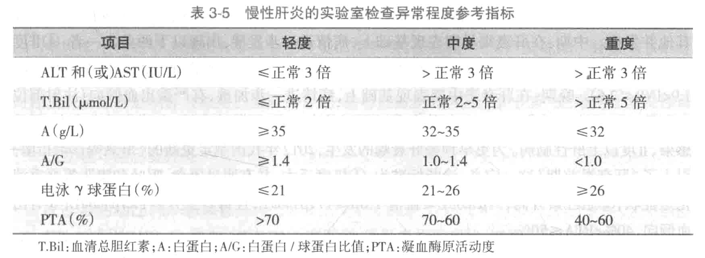
随着CHB抗病毒治疗及 HBV DNA前C基因突变研究的深入，目前主张按 HBeAg及抗-HBe状况将CHB分为以下两大类：
1. HBeAg阳性慢性乙型肝炎 由野生株HBV感染所致，按其自然史可分 HBeag阳性期和抗-HBe阳性期。HBeAg阳性期体内HBV复制活跃，血清含有高水平的 HBV DNA，在机体从免疫耐受期进入免疫清除期以后，肝脏有不同程度的活动性炎症。当 HBeAg向抗HBe转换时，肝功能损害往往一过性加重，然后进入抗-HBe阳性期。此期体内HBⅤ复制减弱或停止，血清HBV DNA转阴，肝脏活动性炎症消散，肝功能恢复正常。然而，反复或进行性发作亦可发展成重型肝炎、肝硬化及肝癌。
2. HBeAg阴性慢性乙型肝炎 主要由HBV前C基因突变株感染所致。特点是血清HBeag阴性，伴或不伴抗-HBe阳性，体内 HBV DNA不同程度复制，肝脏有慢性活动性炎症，血清ALT水平波动性很大，易发展成重型肝炎、肝硬化及肝癌。IFN-a疗效不佳，而NUCs疗程长，停药后反跳率高。本型主要分布在地中海国家，可高达80%~90%；近年包括我国在内的远东地区也逐渐增加，目前约占40%。
乙型肝炎发生肝衰竭称为重型肝炎，系指迅速发生的严重肝功能不全，凝血酶原活动度（prothrombin time activity，PTA）降至40%以下，血清总胆红素迅速上升。我国重型肝炎的病因以乙型肝炎为主。
1. 急性重型肝炎（暴发性肝炎） 相当于急性肝衰竭，以急性黄疸型肝炎起病，2周内出现极度乏力，消化道症状明显，迅速出现Ⅱ度（按Ⅳ度划分）以上肝性脑病，PTA≤40%并排除其他原因，肝浊音界进行性缩小，黄疸急剧加深，极严重的病例甚至黄疸很浅或尚未来得及出现黄疸。出血倾向明显（如注射部位大片瘀斑），一般无腹水。常在3周内死于脑水肿或脑疝等并发症。
2. 亚急性重型肝炎 相当于亚急性肝衰竭，以急性黄疸型肝炎起病，15日至24周内出现极度乏力，消化道症状明显，PTA≤40%并排除其他原因，黄疸迅速加深，每日上升≥17，1 umol/L或血清T.Bi大于正常上限值10倍。首先出现Ⅱ度以上肝性脑病者，称脑病型；非脑病型中首先出现腹水者，称腹水型。
3. 慢性重型肝炎 相当于慢加急性/亚急性肝衰竭，其发病基础有：①慢性肝炎或肝硬化病史；②慢性HBⅤ携带史；③无肝病史及无HBⅴ携带史，但有慢性肝病体征（如肝掌及蜘蛛痣等），影像学改变（如脾脏增大等）及生化检测改变者（如丙种球蛋白升高，白/球蛋白比值下降或倒置）；④肝穿刺检査支持慢性肝炎。慢性重型肝炎其他临床表现同亚急性重型肝炎（PA≤40%，血清TBi>正常值10倍）。亦分脑病型及非脑病型。
亚急性重型及慢性重型肝炎可根据其临床表现分为早、中、晚三期。早期：①极度乏力，有明显厌食、呕吐及腹胀等严重消化道症状；②黄疸进行性加深，血清T.Bi≥171μmolL或每日上升≥171umoL；③有出血倾向，30%<PTA≤40%（或1.5<INR≤1.9）：④未出现肝性脑病或其他并发症。中期：在肝衰竭早期表现基础上，病情进一步发展，出现以下两条之一者：①Ⅱ度以下肝性脑病和（或）明显腹水、感染；②出血倾向明显（出血点或瘀斑），20%<PTA≤30%（或1.9<INR≤2.6）。晚期：在肝衰竭中期表现基础上，病情进一步加重，有严重出血倾向（注射部位瘀斑等），PTA≤20%（或INR≥2.6），并出现以下四条之一者：肝肾综合征、上消化道大出血、严重感染、Ⅱ度以上肝性脑病。为更早预警肝衰竭的发生，2012年我国制定更新的《肝衰竭诊治指南》引入了“肝衰竭前期”这一定义，诊断标准为：①极度乏力，并有明显厌食、呕吐和腹胀等严重消化道症状；②胆红素升高，51mo≤血清T.Bl≤171umoL，且每日上升≥17.1pmoL；③有出血倾向，40%<PTA≤50%。
上述新版指南将肝衰竭分成急性肝衰竭（acute liver failure，ALF）、亚急性肝衰竭（subacute liver failure，SALF）慢加急性肝衰竭（acute on chronic liver failure，ACLF）及慢性肝衰竭（chronic liver failure，CLF）（3-6）。
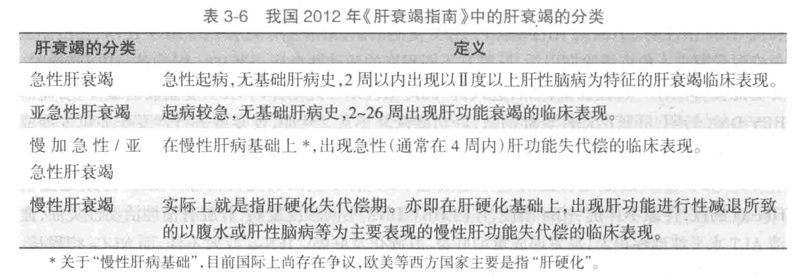
临床表现可有肝功能反复异常、门静脉髙压症、慢性肝病面容（皮肤晦暗）、面部钞票纹、蜘蛛痣、肝掌等，严重时可导致脾功能亢进、食管·胃底静脉曲张破裂出血、双下肢水肿及腹水等。
肝炎肝硬化可以是大结节性或小结节性肝硬化。大结节性肝硬化常发生于慢性肝炎反复活动或亚急性、慢性重型肝炎之后，因肝实质反复坏死、肝细胞团块状増生及明显瘢痕收缩等，形成粗大结节，可使肝脏显著变形。小结节性肝硬化常可发生于部分无症状慢性 HBsAg携带者，因其肝组织并非完全正常，往往有常规肝功能试验不能发现的潜在性轻微活动，长期隐匿性发展成肝硬化，直到肝功能失代偿时方被发现。这种肝硬化因肝实质炎症轻微，仅形成密集小结节，肝功能失代偿出现很慢。
肝炎肝硬化分为代偿期和失代偿期。肝硬化代偿期是指肝硬化早期，属于肝功能试验正常或轻度异常，处于 Child-Pugh a级，门静脉高压症不明显。肝硬化失代偿期是指肝硬化中、晚期，肝功能试验明显异常，处于 Child-Pugh B及C级，门静脉高压症显著，可岀现腹水、肝性脑病、食管-胃底静脉曲张破裂出血等。
肝硬化又可分为活动性和静止性，前者系指肝硬化伴慢性肝炎活动，后者是指虽有肝硬化但血清ALT及胆红素等生化指标正常。
HBⅤ所致急性淤胆型肝炎少见，实际上多数患者属慢性肝炎伴淤胆。起病类似急性黄疸型肝炎，但自觉症状常较轻，黄疸持续3周以上，皮肤瘙痒，粪便颜色变浅甚至灰白，常有明显肝大，肝功能检查血清TBi明显升高，以D.Bi为主，PTA>60%或应用维生素K1肌注1周后可升至60%以上，血清胆汁酸、谷氨酰转肽酶（GGT）、ALP及胆固醇水平明显升高。在慢性肝炎基础上发生上述临床表现者，则属慢性淤胆型肝炎。
常发生于妊娠中、晚期，大多数为急性黄疸型肝炎，易致流产、早产及死胎。妊娠末3个月发病者重型肝炎较常见，病死率髙。据观察，经病原学和病理学确诊的妊娠期乙型肝炎，伴有暂时性皮肤瘙痒者远较非妊娠期乙型肝炎常见，易与妊娠期肝内胆汁淤积症（妊娠良性复发性黄疸）相混淆。
绝大多数为慢性肝炎，或伴淤胆型，易发展成重型肝炎，常有老年性夹杂症。
HBsAg阳性，HBeAg阴性，HBV DNA查不到，无肝炎相关症状、体征及肝功能改变。
在上述两种肝炎硬化基础上均可发生原发性肝癌，无症状慢性 HBsAg携带者亦可不经肝硬化阶段而直接发展为肝原发性肝癌。其发生机制与肝内慢性炎症长期刺激、肝细胞基因突变及HBV DNA特别是X基因整合有关。HBxAg反式激活原癌基因亦起重要作用。各肝癌细胞中整合的HBⅤDNA序列完全相同，提示这些肝癌细胞可能由一株祖代整合型肝细胞克隆增殖而来。黄曲霉毒素等致癌化学物质可能起协同作用。
脾功能亢进是肝炎肝硬化门静脉高压症最常见的并发症之一。临床上表现为脾脏淤血性肿大，外周血白细胞计数和血小板计数不同程度降低，部分患者外周血红细胞计数和血红蛋白定量也可降低。
出血机制包括肝功能严重受损引起凝血因子合成减少、脾功能亢进引起血小板减少、门静脉高压引起的食管-胃底静脉曲张等，是重型肝炎和肝硬化晚期等终末期肝病最严重的并发症之一。可表现为皮肤瘀点、瘀斑、各种腔道出血甚至颅内出血等。临床上以食管-胃底静脉曲张破裂引起的上消化道出血最常见，但应注意与胃黏膜糜烂或消化道溃疡出血相鉴别。
继发感染是重型肝炎、肝硬化晩期及原发性肝癌晚期的常见并发症。常见感染有自发性细菌性腹膜炎（spontaneous bacterial peritonitis，SBP）、肺部感染、肠道感染、胆道感染、脓毒症（sepsIs）等。以细菌感染最为常见，但真菌感染有增加趋势。严重感染可进一步加重肝脏损害。
肝性脑病是重型肝炎、肝硬化晩期及原发性肝癌晩期的常见并发症之一，提示预后不良。
重型肝炎和肝炎肝硬化患者可出现肝肾综合征（hepatorenal syndrome，HRS）和急性肾损伤（acute kidney injury，AKD），提示预后不良。
多见于慢性HBV感染者。临床表现为急性或慢性肾炎，可有水肿、高血压、尿蛋白、红细胞、白细胞、各种管型、血清尿素氮及肌酐升高等表现，晚期可出现尿毒症。组织学上多呈膜性或膜增殖性肾炎。免疫组化可在肾小球系膜和毛细血管基底膜上发现 HBsAg、HBcAg、HBeAg以及IgG、IgM和补体复合物沉积。
重型肝炎和肝硬化失代偿期患者常可岀现低钠血症、低钾血症或高钾血症等。也可出现代谢性酸中毒等电解质紊乱。
常见于中重度慢性肝炎、重型肝炎及肝硬化，在发病过程中岀现高血糖及糖尿。肝源性糖尿病有两型：①胰岛素依赖型：其发病机制可能是肝炎诱发的自身免疫反应损害胰岛β细胞，导致胰岛素分泌减少。依据为患者血清胰岛素含量绝对减少，同时因肝脏灭活功能减弱而致血浆胰高血糖素水平増高，二者协同导致血糖升高；②胰岛素非依赖型：其发病机制是反应细胞表面的胰岛素受体减少，反应细胞内的胰岛素受体后效应（pos-receptor effects of insulin减弱，以致胰岛素不能发挥作用。这类患者血浆胰岛素绝对含量正常或升高，而相对含量不足，血浆胰高血糖素含量亦因肝脏灭活减少而増多，从而导致血糖升髙。本型多见，胰岛素疗法效果差。
脂肪肝是中性脂肮甘油三酯）在肝细胞内大量堆积的结果。因大量游离脂肪酸被动员入肝脂肪酸氧化减少，而酯化成甘油三酯增多，加之负责脂蛋白排泌的载脂蛋白合成减少，均能导致脂肪肝。慢性肝炎易继发脂肪肝，其机制不明，可能与肥胖、糖耐量异常、血液游离脂肪酸及甘油三酯增多有关。主要特点为：①肝炎后明显发胖；②一般情况较佳，食欲良好；③血清ALT水平轻到中度升高，GGT大多升高，常规肝功能试验其他项目多正常；④血脂含量升高；⑤超声波检查呈脂肪肝波型；⑥确诊有赖于肝穿刺病理检査。
属肝炎良性后遗症，其发病机制可能是肝细胞葡萄糖醛酸转移酶活性降低。主要特点为：①肝炎后血清TBi长期轻度升高，多以间接胆红素升高为主；②黄疸常有小幅较快的波动，多于劳累或感冒后轻度上升；③肝炎已达临床治愈标准，不随黄疸波动而岀现肝炎复发。本症应与 Gilbert综合征鉴别，此综合征常见于青少年，有家族史，无肝炎病史，无肝脾肿大。
常用的HBⅤ特异性血清学标志物俗称“乙肝两对半”，即 HBsAg/抗HBs、HBeAg/抗-HBe及抗-HBc，其意义见表3-7。通常采用 ELISA法或时间分辨法进行检测，但目前国内外应用较普遍的是雅培（Abot及罗氏（Roche）试剂盒。必要时也可检测前Sl和前S2抗原及其抗体，以及采用去污剂处理血清标本后检测 HBcAg。
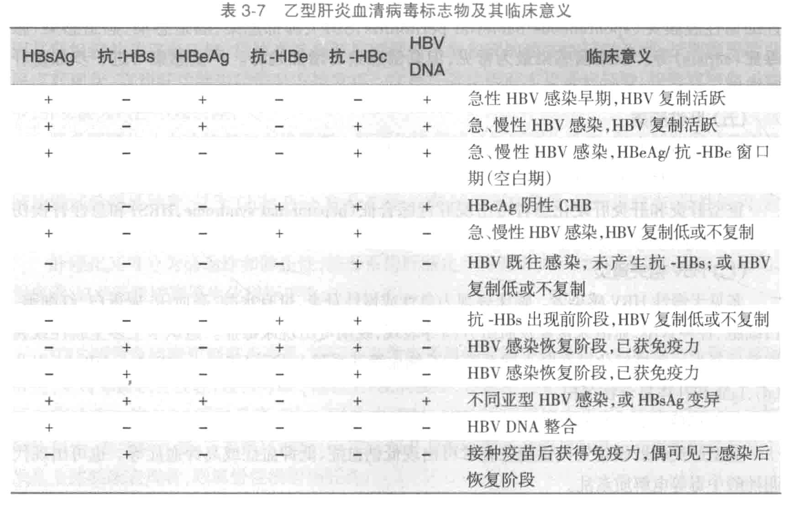
1. HBSAg及抗 HBs HBsAg及抗-HBs的定量，雅培及最近的罗氏试剂均采用了IU及IU，罗氏试剂则采用了临界指数（cutoff index，COD），故后者实际上是半定量。目前研究认为，其定量对于抗病毒疗效及其转归的判断及预测有重要作用。血清 HBsAg在疾病早期出现。一般在ALT升高前2-6周，在血清中即可检出 HBsAg。HBsAg阳性是HBV感染的主要标志之但不能反映HBV复制状态及预后。血清抗HBs的出现是HBV感染恢复的标志。注射过乙型肝炎疫苗者，亦可出现血清抗-HBs阳性，提示已获得对HBV的特异性免疫。一般血清抗-HBs水平≥10mlU/ml对HBV感染有保护作用。HBsAg和抗-HBs也可同时阳性，各地报告的发生率相差较大，但多在5%以下。HBs Ag和抗-HBs共存常见于以下情况：①血清中同时存在的抗HBs是针对另一血清亚型 HBsAg的抗体，与同时存在的 HBsAg不能完全匹配；②HBVS基因“a”表位发生变异；③即将发生 HBsAg/抗-HBs血清学转换。
2. HBCAg及抗HBC 用普通的方法在血清中一般不能检出HBV核心抗原（HBcAg）血凊抗-HBc阳性，提示感染过HBV，可能为既往感染，亦可能为现症感染。抗-HBc包括抗-HBe lgM和抗-HBe IgG，但主要是抗-HBc leg。急性肝炎及慢性肝炎急性发作时均可出现抗-HBclgM，但急性乙型肝炎抗体定量较高。如抗-HBc IgM阳性，抗-HBe IgG阴性，提示为急性乙型肝炎。如抗-HBc IgM及抗-HBc IgG均为阳性，则为CHB急性发作。
3. HBeAg及抗HBe 血清HBeAg阳性，提示有HBV复制。急性HBV感染的早期即可出现 HBeAg。抗-HBe阳性是既往感染HBV的标志。HBeag及抗-HBe的半定量单位为PEU ml，为 Paul Ehrlich Institute（PE）（Langen，Germany）的标准单位，但雅培及罗氏半定量并未采用PEIU，而采用了COI。
血清HBⅤDNA是HBV复制及有传染性的直接标志。急性HBV感染时，血清 HBV DNA出现较早。在慢性HBV感染者，血清 HBV DNA可持续阳性。目前一般采用实时荧光定量PCR法进行检测。血清 HBV DNA定量检测不仅用于HBV感染的诊断，也是疗效考核的重要指标。HBV DNA荧光定量检测结果通常用拷贝m表示，但国际上已改用IUml（1相当于5.6拷贝）。
HBV基因分型和耐药变异检测的常用方法有：①特异性引物PCR法；②限制性片段长度多态性分析法（RFLP）；③线性探针反向杂交法（INNO-LiPA）；④基因序列测定法；⑤实时PCR法（real-time pcr）等。
腹部影像检査（B超、CT、MR可了解肝脏形态、质地、大小、有无占位、脾脏大小、门静脉宽度、有无腹水等。肝脏瞬时弹性扫描（Fibroscan）是一种新型无创性肝纤维化检测手段，通过测定肝脏瞬时弹性来反映肝实质硬度和评估肝纤维化程度。
乙型肝炎及其临床分型的诊断应结合病史、症状、体征、实验室检査、影像检査、肝脏瞬时弹性扫描乃至病理组织学检查进行综合判断。完整的诊断应包括病因诊断、临床分型及病理诊断等。诊断举例：①病毒性肝炎，乙型，急性黄疸型；②病毒性肝炎，乙型，慢性，重度，G3S4；③病毒性肝炎，乙型，慢性，肝硬化代偿期；④病毒性肝炎，乙型，慢加急性肝衰竭。
血清 HBsAg阳性是HBV感染的重要依据，HBsAg转阴及抗HBs出现通常是HBV清除和临床痊愈的标志。若 HBsAg阳性持续超过6个月，则为慢性HBⅤ感染。值得重视的是，少部分HBV感染者虽然血清 HBsAg阴性，但血清或肝组织 HBV DNA阳性，且处于低水平复制状态，此为“隐匿性HBV感”（occult hbv infection，可见于抗-HBs和（或）抗-HBc阳性的患者。
包括乙型肝炎在内的各种原因引起的急性无黄疸型、急性黄疸型和急性淤胆型肝炎，其临床诊断标准是一致的。慢性乙型肝炎临床表现典型者诊断不难，而临床表现不典型者则应通过仔细询问病史、进行B超等影像检查及肝穿刺病理检查加以确诊。急性、亚急性及慢性重型肝炎各有相对特殊的临床表现，多数情况下诊断不难。然而，亚急性及慢性重型肝炎的脑病型易与急性重型肝炎混淆，起病似“急性肝炎”的慢性重型肝炎也易与亚急性重型肝炎混淆，故应特别重视询问病史长短，检查有无慢性肝病体征，以期获得准确诊断；肝穿刺病理检查可将不少临床诊断为亚急性重型肝炎的病例纠正诊断为慢性重型肝炎。对无症状慢性 HBV/HBsAg携带者的临床诊断应慎重，因为肝穿刺病理检查发现其中许多病例呈“轻微肝炎”（minimal hepatitis），部分病例呈慢性肝炎轻度、中度甚至重度改变。
确诊慢性HBⅤ感染后，应进一步评估患者所处的疾病进程，并给予必要的监测。对于免疫耐受期患者，可每隔6个月左右监测血清ALT，每12个月左右监测 HBeAg状态、HBsAg水平及HBV DNA载量。对于肝炎病情活动血清ALT升高）和或超显示肝脏有明显改变的CHB患者，至少每3个月左右监测血清ALT和 HBV DNA载量，每6个月左右监测 HBeag状态和 HBsAg水平。对于乙型肝炎肝硬化患者，更应定期监测肝功能、HBⅤDNA载量、病毒抗原水平、肝纤维化生化指标、肝脏弹性变化（Fibroscan）、血常规（特别是白细胞和血小板计数）凝血功能（PIA和INR）、AFP及腹部B超等，必要时行肝活检病理检査、上消化道钡餐造影或胃镜检査，以期准确判断肝硬化的严重程度，有无门静脉高压症和脾功能亢进，有无食管-胃底静脉曲张，及早发现原发性肝癌等。
急性乙型肝炎应与甲型肝炎、戊型肝炎相鉴别，慢性乙型肝炎应与丙型肝炎相鉴别。主要通过病原学检查进行鉴别。
迄今已发现1000余种药物可引起药物性肝损伤（drug-induced liver injury，DLD.特别是解热镇痛药物、抗结核药物、磺胺类药物、抗肿瘤药物、抗艾滋病药物等，不少中草药也可引起各种类型的DⅠ。药物和毒物性肝损伤可呈肝细胞损伤型、胆汁淤积型、混合型、血管损伤型（如土三七等可引起肝小静脉闭塞症）。因此应注意询问患者的用药史和化学毒物接触史，以资鉴别。
可出现血清ALT升高甚至黄疸、肝脾肿大等，应与乙型肝炎相鉴别。但患者除上述表现外，尚有长期发热、淋巴结肿大、咽峡炎、皮疹等表现，外周血白细胞总数及淋巴细胞増多，异型淋巴细胞达10%以上，血清嗜异性抗体阳性，EB病毒抗体阳性。
黄疸出血型钩体病应与乙型肝炎引起的肝衰竭相鉴别。钩端螺旋体病患者有疫水接触史畏寒、发热，周身酸痛无力，结膜充血，腹股沟淋巴结肿大，腓肠肌压痛，血凊显凝试验阳性，青霉素治疗显效迅速。
常见原因是胆管结石和肿瘤，主要表现为梗阻性黄疸、皮肤瘙痒、大便颜色变浅甚至灰白。急性梗阻化脓性胆管炎患者在出现黄疸前常有胆绞痛、寒战、高热，外周血白细胞总数及中性粒细胞显著增高。B超、CT、MRIⅠ、逆行胰胆管造影、ERCP等检査可发现肝内外胆管扩张、结石、炎症或肿瘤等病变。
是一组由于自身免疫异常导致的肝脏疾病，突出特点是血清中存在自身抗体，包括自身免疫性肝炎（AIH）、原发性胆汁性肝硬化（PBC）及原发性硬化性胆管炎（PSC）等。
见于孕妇，皮肤瘙痒眀显，先痒后黄，黄疸轻而痒感重，肝功能变化较轻，分娩后黄疸迅速消退，再次妊娠时可复发。
临床酷似重症肝炎。本病多发生于年轻首孕妇女的妊娠后期，发病机制尚未阐明。起病急，持续频繁恶心呕吐，病初可有急性上腹剧痛，继而出现黄疸并进行性加重，皮肤瘙痒少见；短期内出现肝、肾衰竭，虽有严重黄疸但尿胆红素阴性，血糖降低，血白细胞增高。常并发急性出血性胰腺炎而致血清淀粉酶升高，超声检査呈脂肪肝波型。肝穿刺病理检査显示弥漫肝细胞脂肪变性。
血吸虫病、肝吸虫病、肝结核、酒精性肝病、非酒精性脂肪性肝病、肝脏淤血及肝脏肿瘤等均可有肝功能异常及肝大等表现，应加以鉴别。
急性乙型肝炎大多预后良好，约2%~10%可发展成慢性乙型肝炎。在慢性HBV感染时，由于免疫病理机制错综复杂，病情迁延不愈或反复发作，致使部分病例发展成肝硬化及肝衰竭，少数病例最终转化为原发性肝癌。重型肝炎病死率颇高，国外为80%-90%，国内为50%-78%，近年将其分成坏死型及失代偿型进行救治，并广泛应用NUCs进行抗HBV治疗，已显著提高了存活率。
总体治疗原则是：①有抗病毒治疗指征时，应积极给予适当的抗病毒治疗；②保肝退黄治疗；③适当休息、合理营养等对症支持治疗；④积极治疗肝衰竭、肝硬化失代偿及各种并发症，包括人工肝治疗、肝移植等。应避免饮酒及使用对肝脏有害的药物，用药宜简不宜繁，以免增加肝脏负担。
急性期卧床休息，给予清淡、易消化饮食，适当补充维生素B、维生素C等。进食过少及呕吐者，可每日静滴10%葡萄糖1000-1500m，酌情补充氨基酸、氯化钠和氯化钾。考虑到本型绝大部分（约90%）为自限性，故通常不必进行抗病毒治疗；然而，如有慢性化倾向，或不易判定是否为急性过程，或呈现重症化过程，甚至有肝移植指征时，应给予抗HBV治疗，通常选用NUCs。
抗病毒治疗因HBⅤ持续复制，病情易反复或持续活动，故抗病毒治疗是CHB最根本的治疗。各种CHB防治指南有关抗病毒治疗目标的叙述多较复杂，可概括如下：①近期目标或直接目标：充分抑制病毒复制，减轻肝组织炎症，改善肝功能；②长期目标：减少肝炎发作，延缓或阻止肝硬化及肝癌的发生，提高存活率，改善生活质量。
CHB抗病毒治疗应答的定义见表3-8
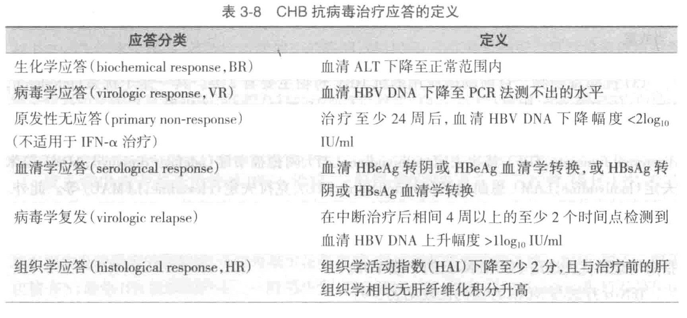
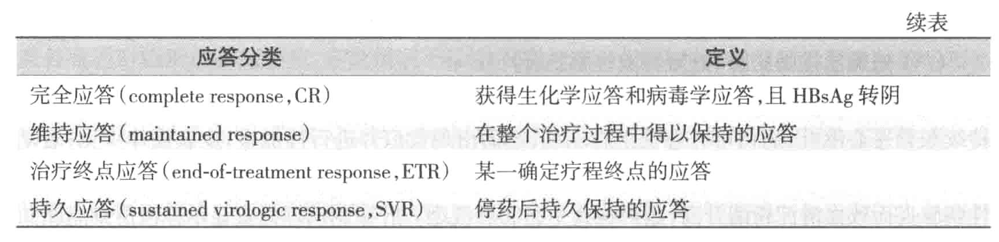
（2）CHB是否需要抗病毒治疗的判断流程见图3-14。
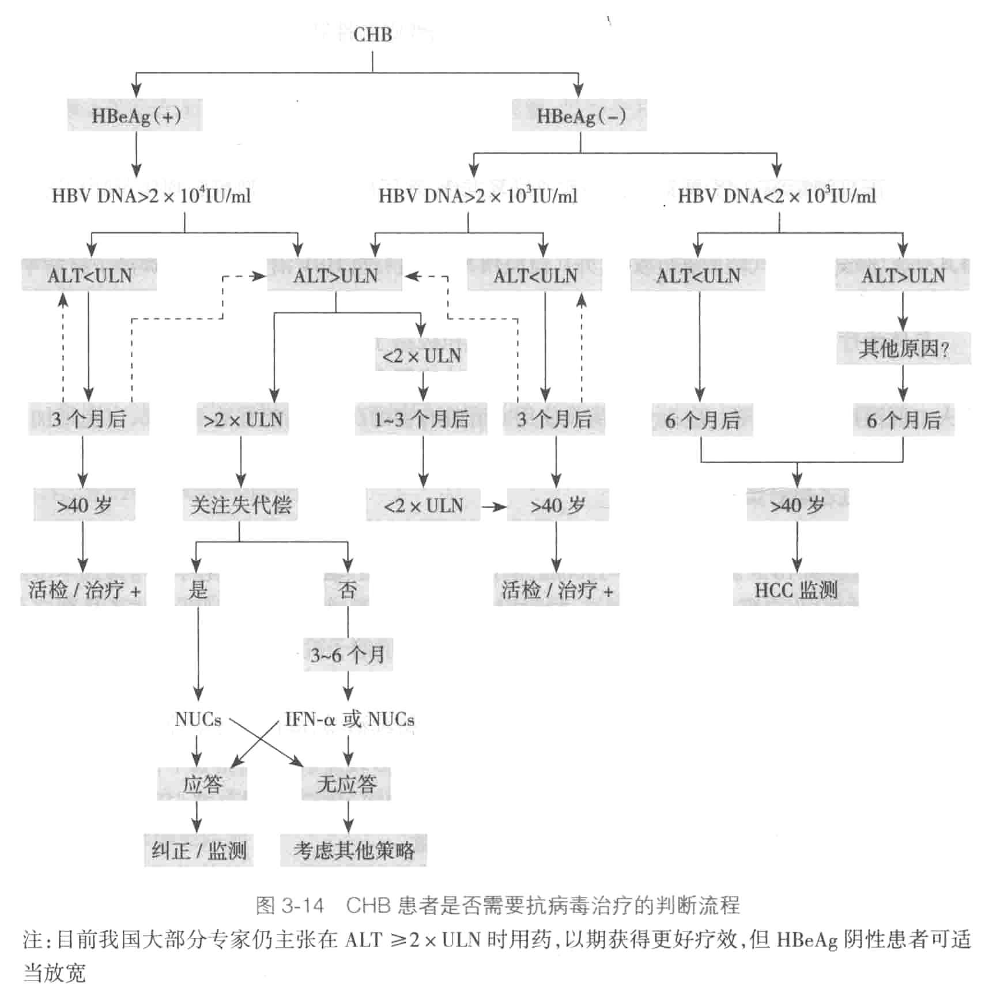
（3）抗病毒药物目前临床应用的抗HBV药物主要有2类。其一是干扰素（interferon，IFN-α），包括普通干扰素（standard interferon alpha）和聚乙二醇化干扰素-a（pegylated interferon alpha，PEG-IFN-α）。其二是核苷酸）类似物，主要有恩替卡韦（entecavir，ETV）、替诺福制（tenofovir disoproxil fumarate，TDF）、替比夫定（（telbivudine，Ldm阿德福韦酯（adefovir dipivoxil，ADV）拉米夫定（lamivudine，LAM）、恩曲他滨（emtricitabine，FTC）、克拉夫定（clevudine，LFMAU）等。此外，胸腺素等免疫调节剂也可应用。这些抗病毒药物各具特点，其选用应综合考虑患者的病情特点、药物疗程、药物疗效、耐药风险、药物安全性、患者的耐受性及经济承受能力等。近年来国内外指南均建议优先选用 PEG-IFN-a、ETV或TDF。
IFN疗法与NUCs疗法的比较见表3-9。
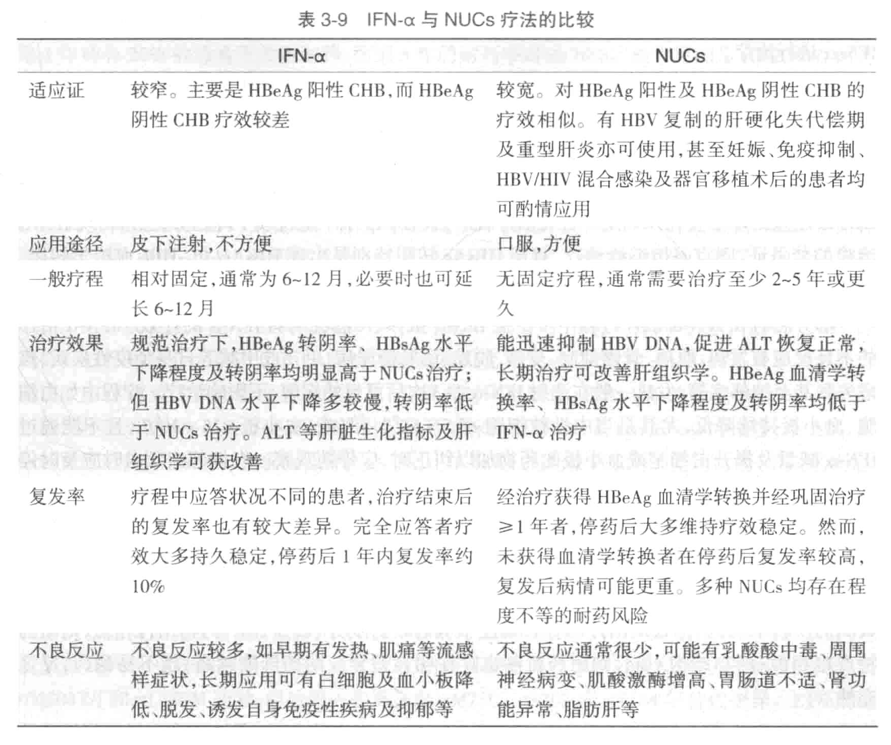
1）IFN-α类：IFN-α的抗HBⅤ效应乃是通过诱生抗病毒蛋白及免疫调节双重活性实现，但其通过诱导抗病毒蛋白而抑制HBV复制的能力较为有限，而以增强机体免疫功能为主。IFN-α可诱导2∵-5腺苷合成酶的激活，催化寡腺苷酸合成；后者又可激活内源性核糖核酸内切酶，裂解病毒mRNA，阻止HBV复制。IFN-a的免疫调节作用主要在于诱导受感染肝细胞膜表达人类白细胞抗原（HLA），促进T细胞的识别和杀伤效应，增强CTL细胞的功能；诱导Th型细胞因子分泌，正向调节特异性细胞免疫功能。
IFN-α治疗应答的高低，受患者HBV传播方式、年龄、性别、感染时长、肝脏炎症活动度（血清ALT水平）、HBⅤ基因型、HBⅤDNA载量、有无肝硬化、既往抗HBV治疗史等因素的影响。临床确定IN-α治疗适应证及预测疗效时应充分考虑这些因素。在除外其他因素影响的情况下，CHB患者血清ALT水平升高常提示肝脏炎症活动，间接反映机体有一定程度的HBV相关细胞免疫应答能力，这对于抗病毒药物更好地发挥疗效具有重要意义。临床实践表明，治疗前血清ALT2×ULN，水平越高，且持续时间越长的病例，对IFN-α的应答也越好。肝活检病理组织学检査较血清ALT能更准确地反映肝组织炎症程度；随着肝组织炎症分级的递增，对IFN-α产生完全应答的比例也显著上升。代偿良好的活动性肝硬化（Child a级）病例，其血清HBV水平一般较低，肝脏炎症活动较强，IFN-α治疗的应答率亦较高；但部分患者耐受性较差，有发生肝功能失代偿及重症化之虑，故应严格掌握适应证。
成人CHB患者若选用普通IFN-治疗，一般以500-600万U皮下注射，隔日1次，疗程6-12个月。PEG-IFN-α是普通IN-α分子与聚乙二醇分子的复合物。聚乙二醇分子很稳定，般对人体无害，但可减缓IFN-α降解，防止IFN-a从肾脏排出，半衰期延长达40-100小时，因而在血液中有较稳定的高浓度，不仅可减少注射次数，且可提高患者的依从性。此外，聚乙二醇可包被IFN，避免IFN抗体的产生。一般用法为：PEG-IFN-ax-2b每次1.0-1.5μg/kg，或 PEG-IFN-a-2a每次135-180μg，每周1次，疗程12个月。若经济许可，应优先选用 PEG-IFN-a而不是普通IFN-a进行治疗。
对于 HBeag阳性的CHB患者而言，若IFN-a治疗后达到血清 HBV DNA转阴，发生 HBeAg抗-HBe血清学转换，ALT恢复正常，则疗效多较稳定而持久，复发率低。若仅有血清 HBV DNA转阴、ALT恢复正常，而 HBeAg虽然转阴但未出现抗-HBe，则疗效相对并不稳定，复发率较高。近年特别提倡“应答指导下的治疗（response-guided treatment，RGT）”，其重要内容之一是根据HBsAg定量的动态变化来确定个性化的疗程。若 HBsAg水平呈持续下降趋势，且未出现IFN-α冶疗的禁忌证，则宜坚持继续治疗，直至 HBsAg转阴特别是出现 HBsAg/抗-HBe血清学转换，而不必拘泥于所谓6个月或12个月的疗程。
部分患者在IFN-a治疗过程中可产生IFN-a抗体，可能会削弱IN-a的疗效。IFN-a治疗的不良反应有发热、肌痛、骨髓抑制、皮疹、脱发、诱发糖尿病、甲亢或甲减等自身免疫性疾病、焦虑失眠甚至抑郁症等，发热一般在注射IFN-α2-3次后可自然缓解，不影响治疗。疗程中如白细胞、血小板持续降低，尤其是当中性粒细胞<0.5×10几和（或）血小板<25×10°几L，且不能通过IFN-a减量及提升白细胞或血小板的药物加以纠正时，应停药观察。有抑郁症倾向时应及时停药并加以严密监测。
2）NUCs：根据分子结构的不同，NUCs大致可分为三类：①左旋核苷类（L-核苷类）以LAM和LAT为代表，此外还有未在我国上市的FTC及 LFMAU等；（②无环磷酸盐类：有ADV和TDF③环戊烷/戊烯类：如ETV。这些药物能直接强效抑制 HBV DNA复制，作用靶点均为HBV多聚酶的反转录酶区，但长期治疗均存在程度不等的耐药变异（表3-10）。药物结构相似，则耐药特点也相似；药物结构不同，则耐药机制也存在明显差异。耐药屏障越高，越不易耐药，反之亦然。
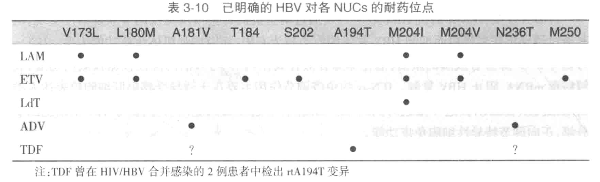
有关NUCs的疗程及治疗终点，国际上在达成共识的同时仍存在不少争议。主要共识有：
①基本疗程至少1年；② HBeAg阳性者若达到 HBV DNA检测不出（PCR法）ALT复常、HBeAg/抗-HBe血清学转换，可认为达到治疗终点，但应在巩固治疗至少1年后再考虑停药；而继续坚持服药则有可能获得更理想的疗效，包括 HBsAg转阴以及 HBsAg抗-HBs血清学转换，尽管概率很低；③对 HBeAg阴性CHB患者，理论上最好治疗至 HBsAg转阴，特别是出现 HBsAg/抗HBs血清学转换之后。
①LAM：是2-3·-双脱氧-3’-硫代胞嘧啶核苷异构体，是临床上最早应用的NUC。体外实验证明LAM对HBV复制有较强的抑制作用。全球多中心临床试验显示，LAM100mg，每日1次，对 HBeag阳性CHB患者有良好疗效，可快速降低血清 HBV DNA水平，使血清ALT恢复正常，促进 HBeAg血清学转换及改善肝脏组织学。LAM随机双盲安慰剂对照临床研究（4006研究）证实，LAM治疗CHB肝硬化患者能使疾病进展及肝癌发生的风险降低50%以上，并能有效提高患者生存质量。对接受肝移植的患者，LAM联合小剂量HBIG可有效预防HBV再感染。对于接受化疗或免疫抑制治疗（特别是肾上腺皮质激素）的 HBsAg阳性者，预防性使用LAM可有效降低乙型肝炎的发作。HBⅤ对LAM易于发生耐药变异，随应用时间延长而耐药率迅速增高，第1年约有20%的患者可发生耐药，而第5年的耐药率可达70%。最常见的是rM204V耐药变异（YMDD变异），伴或不伴rL180M变异。耐药变异将导致病毒反弹，加之ETV、TDF等新的NUCs问世，故近年来LAM的应用明显减少。
②ADV：是腺嘌呤核苷单磷酸类似物，可抑制反转录酶及DNA聚合酶的活性，掺人合成中的 HBV DNA链而导致其合成终止。临床研究显示，采用ADV10mg，每日1次，可有效抑制HBⅤ野生株及LAM耐药突变株。有资料显示，ADV持续治疗4-5年，肝细胞内 cccDNA储存池明显下降，血清 HBsAg转阴率可达5%，纤维化积分下降。约30%原先未接受NCUs治疗的患者对ADV表现为“原发性无应答”，即在应用ADV治疗6个月后，血清 HBV DNA下降幅度<21g。近年认为这可能与ADV剂量不足有关；此外，部分CHB患者体内可能存在天然ADV耐药株。ADV的耐药变异率低于LAM.常见耐药相关变异为rN236T和rtA18V/，可单独或联合出现。ADV可致少数患者血清肌酐增高，且具有时间依赖性，用药1年的发生率约3%，用药5年的发生率可达9%。新近还有ADV引起范可尼综合征（Fanconi syndrome）的报道，系ADV导致的肾脏近曲小管损伤，表现为低钾血症（肌无力、软瘫、周期性瘫痪等）低钙血症（手足搐搦症）等，而长期低钙血症可引起继发性甲状旁腺功能亢进、肾性骨病等。
③ETV：是环戊烷2-脱氧鸟嘌呤核苷的碳环类似物，可在下述3个不同的环节快速强效抑制HBV复制：a.HBV DNA聚合酶的启动阶段；b.以前基因组RNA为模板合成 HBV DNA负链的反转录阶段；c.HBV DNA正链的合成阶段。临床研究显示，ETV0.5mg，每日1次，对HBV的抑制效应明显优于常规剂量的LAM及ADV；对LAM耐药的HBⅤ突变株亦有抑制效应，但弱于对HBv野生株的抑制。HBⅤ对ETV的耐药可能是通过2步过程实现的，初期首先筛选出rtM204V和rLl8M变异，然后进一步筛选出rtM250、rts202或rT184等替代变异。ETV的耐药基因屏障显著高于LAM，因为只有在rM204Ⅵ和rL.180M变异的基础上再出现其他一种变异，HBV才会对ETV完全耐药。本药用于初治患者应答良好，耐药率低。对LAM或LT耐药者，以往曾推荐转换为ETV加量疗法（从每日0.5mg增至lmg），但因最终疗效仍不理想，故现多推荐在继续应用LAM、LAT或换用ETV（一般不加量）的基础上，联用ADV（可酌情加量至每日15~20mg）或TDF；或换用TDF。
④LaT:L-脱氧胸腺嘧啶核苷（L-deoxythymidine，LT）亦是一种L核苷类似物，但较LAM具有更强大的抗HBⅤ活性。临床研究显示LAT对HBV复制的抑制效果优于LAM，但亦存在耐药率较高的问题，常见耐药变异为rM2041，因此与LAM存在交叉耐药。一般用法是600mg，每日1次值得一提的是，本品不仅能强效抑制HBⅤDNA复制，还能促进 HBeAg血清学转换。此外，Ia还可增加肾小球滤过率（GFR），从而保护肾功能，但机制尚不明确。由于LAT和TDF在妊娠安全性上均属于B类药物（即对动物胚胎无致畸性，但在人类胚胎的安全性未知），因此认为其对胎儿的安全性可能优于其他NUCs。但需注意，LAT与IFN-a特别是与 PEG IFN-a联用时，可能增加周围神经病变的风险，故应列为配伍禁忌。此外，长期用药（多在半年以后）常见肌酸激酶（creatine kinase，CK）增加，多为一过性或反复波动，一般不影响治疗；但极少数患者可出现严重的横纹肌病变，必须换用ETV等其他NUCs。
⑤TDF：是一种核苷酸类似物，结构与ADV相似。欧美等国已批准用于抗HIV及抗HBV，在我国国产制剂尚处于抗HBⅤ治疗的临床验证阶段，原研制剂已于2013年上市。Truvada是TDF和FTC组成的复方制剂。临床研究显示，TDF每日300mg的抗HBV疗效优于ADV每日10ng。TDF的耐药率低，常见耐药相关变异为tA194T，但是否存在其他突变位点以及与ADV是否存在交叉耐药尚待更多研究。TDF与ETV、LAM及LAT等无交叉耐药，因此不仅可用于CHB患者的初始治疗，也可作为这些药物治疗失败后的挽救治疗。TDF的安全性良好，肾毒性比ADⅤ小，但有极少数报道称可引起范可尼综合征及肾功能不全；妊娠安全性上与ⅠAT同属于B类药物。
⑥FTC：结构与LAM相似，能强效抑制HIV及HBV复制。批准用于抗HV治疗的 Emtriva是只含FTC单一成分的制剂，而 Truvada是FTC及TDF的复方制剂。有研究显示，FTC治疗CHB可获得明显的生物化学、病毒学和组织学改善率，但对 HBeag血清学转换率无明显改善。耐药特点与LAM相似，可诱导YMDD变异，故本品迄今较少用于抗HBV治疗。
⑦ LFMAU：是一种尿嘧啶核苷类似物。临床研究显示，LFMAU每日30mg，连服24周，可明显抑制HBⅤDNA复制；且某些患者在 LFMAU撤除后，病毒持续抑制可达24周以上。然而，与对照组相比 LFMAU并不能有效提高 HBeAg血清学转换率，且可诱导 HBV YMDD变异，因此其应用前景不佳。
3）免疫调节药物：此类药物具有一定的免疫调节作用，特别是增强Th型细胞因子活性而提高细胞免疫功能，抑制病毒复制。然而，单独用于CHB的抗病毒治疗时，其对HBV的抑制作用多不显著，因此常与IFN-a和（或UCs合用。主要制剂：①胸腺素-1（To-1）：由28个氨基酸构成，剂量1.6mg，以lml注射用水稀释，皮下注射，每周2次，每6个月为一疗程；②胸腺五肽剂量10mg，稀释后肌注或静脉滴注，每日1次或每周2次，每6个月为一疗程。
4）联合治疗：由于IFN-α疗效有限，而NUCs缺乏免疫调节作用且存在耐药现象，因此联抗病毒治疗成为重要选项之一。其目的主要在于增加抗病毒疗效，同时减少或避免耐药的发生。可采取的策略主要有：①2种耐药模式不同的NUCs起始联合，例如LAM+ADV；②一种NUC耐药后，加用另一种NUC；③一种NUC耐药后，换用另一种NUC；④一种IFN-α（优先选用PEG-IFN-α）与一种NUC（除外LdT同时或序贯使用。联合治疗的方式和效果有待深入观察。值得注意的是，近年临床发现NUCs联合应用中交叉耐药明显增多，以LAM+ADV较常见，致使后继用药选择困难。处理上部分患者可序贯使应用IFN，但疗效较为有限；对停药可能发生反跳导致重症化者，先后采用增加ADV剂量或改用ETV+ADV，均取得良好疗效，新近采用TDF或ETV+TDF，则疗效更佳。
5）复发与再治疗各家有关治疗复发率报道尚不一致。一般认为NUCs复发率高于IFN-α，巩固治疗时间越长复发率越低。再治疗时选用同样药物有效，且应答速度较快。有关研究尚待进一步深入。
2. 抗炎保肝药物 主要有以下几种：①抗炎类药物：甘草酸类制剂具有类似肾上腺皮质激素的非特异性抗炎作用而无抑制免疫功能的不良反应，可改善肝功能。目前甘草酸类制剂发展到了第四代，代表药物为异甘草酸镁注射液、甘草酸二铵肠溶胶囊。②抗氧化类药物：代表药物主要为水飞蓟素类和双环醇。水飞蓟素对CCl4等毒物引起的各类肝损伤具有不同程度的保护和治疗作用，还能增强细胞核仁内多聚酶A的活性，刺激细胞内的核糖体核糖核酸，增加蛋白质的合成。③解毒类保肝药物：代表药物为谷胱甘肽GSH、N-乙酰半胱氨酸（NAC）及硫普罗宁等，分子中含有巯基，可从多方面保护肝细胞。可参与体内三羧酸循环及糖代谢，激活多种酶，从而促进糖、脂肪及蛋白质代谢，并能影响细胞的代谢过程，可减轻组织损伤，促进修复。④肝细胞膜修复保护剂：代表药物为多烯磷脂酰胆碱，多元不饱和磷脂胆碱是肝细胞膜的天然成分，可进人肝细胞，并以完整的分子与肝细胞膜及细胞器膜相结合，增加膜的完整性、稳定性和流动性，使受损肝功能和酶活性恢复正常，调节肝脏的能量代谢，促进肝细胞的再生，并将中性脂肪和胆固醇转化成容易代谢的形式；还具有减少氧应激与脂质过氧化，抑制肝细胞凋亡，降低炎症反应和抑制肝星状细胞活化、防治肝纤维化等功能，从多个方面保护肝细胞免受损害。⑤利胆类药物：本类主要有S-腺苷蛋氨酸（SAMe）及熊去氧胆酸（UDCA。SAMe有助于肝细胞恢复功能，促进肝内淤积胆汁的排泄，从而达到退黄、降酶及减轻症状的作用，多用于伴有肝内胆汁淤积的各种肝病。
3. 促进蛋白合成的药物 生长激素能促进肝细胞合成蛋白质，提高血清白蛋白水平，改善凝血酶原时间。用法为每日4IU，皮下或肌内注射，20日后减为每周4U。由于水钠潴留、高血糖及继发肿瘤风险升高等不良反应，目前应用不多。
4. 抗肝纤维化药物 目前还缺乏有肯定临床疗效的药物。可酌用扶正化瘀胶囊、复方鳖甲软肝片、安络化纤丸及肝复乐等。
重型肝炎的形成是肝细胞以不同速度发生大量坏死及凋亡而陷入肝衰竭的过程。肝衰竭能否逆转，决定因素是尚存活肝细胞数量多寡。若肝细胞死亡殆尽，丧失再生基础，欲用药物逆转肝衰竭的机会甚少，所以必须在尚有相当数量肝细胞存活的疾病早期或较早期抓紧监护和治疗。以坏死和失代偿为主的两种类型之鉴别及处理见表3-11。
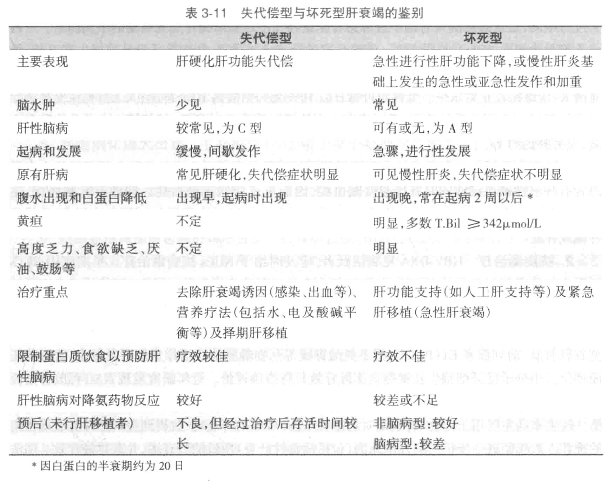
1. 支持疗法 重型肝炎的治疗主要是支持性的，目的是贏得肝细胞再生及组织损伤恢复的时间，或去除失代偿的诱因。一般措施包括：①密切监测生命体征；②仔细检查肝脏大小，记录尿量及腹围变化；③严格隔离消毒，限制探视，防止医院内感染；④静脉插管以便采血、测压及输注营养物质；⑤注意口腔及皮肤护理，注意所有插管的无菌处理；⑥动态监测肝功能、心肺功能、血清酸碱和电解质、动脉血气、PTA及血糖水平等指标的变化：⑦心血管、肺、肾及脑的并发症很常见，常标志发生多器官衰竭，早期发现和处理与近年生存率的提高相关；⑧昏迷患者留置导尿仅限于女性（男性可用尿套）。
严重肝病营养支持疗法的管理原则为：①“补充”原则：包括白蛋白、能量、微量元素等②“纠偏”原则：包括支链氨基酸/芳香氨基酸比值（BCAAJAAA）、血氨、电解质、酸碱、解毒（人工肝）等；③“调整”原则：限制蛋白摄入（预防肝性脑病）、免疫调节等；④“对症”原则：包括脑水肿脱水及过度通气等。
重型肝炎患者毎日约需热量2000千卡以上。部分患者病情恶化，可能与消耗、衰竭、感染等所致的热量长期不足有关。严重肝病时各种营养素的补充应遵循以下要点：①蛋白摄入量应在病变恢复需要和肝功能可耐受之间，进行不同病期的个体化探索。在血浆白蛋白过低、水肿及腹水时，需给予高蛋白饮食，可按每日1.5-2.0gkg计算，成人每日需100-120g。肝性脑病早期（首日）应严格限制蛋白质摄入，以减少肠源性氮质的来源，以后每日维持蛋白质摄入量1-1.5g kg体重。植物蛋白可能较易耐受，动物蛋白则以牛奶较佳。待患者清醒后逐渐增加蛋白质供应，以患者能够耐受为度。补充白蛋白并不会加重肝性脑病，且可提高血浆胶体渗透压，有效控制腹水和缓解脑水肿。②支链氨基酸未必能有效拮抗芳香族氨基酸，但从营养学角度看，有助于维持正氮平衡，用于慢性肝衰竭时较为恰当。③肝衰竭时，糖利用无明显异常，而糖原合成与储备不足。热量主要由葡萄糖溶液补绐，但应用时间过久、浓度过高时因肝脏不能充分同化而以尿糖排岀，因此单用含糖溶液常难满足热量补充。静滴葡萄糖液应注意时间分配，防止夜间及凊晨低血糖。④有研究表明，严重肝病时对中、长链脂肪乳剂的廓清基本正常，故脂肪摄入量不必过分限制，适量静脉滴入有助于缓解患者能量补充不足和单纯补充葡萄糖的不利因素。一般成人剂量为每次250ml，每周2次。⑤维生素的补充也很重要，特别是适量补充维生素B族、维生素C等。⑥注意补充电解质和纠正电解质紊乱。低钾时同时口服及静脉补钾；如尿量正常，血清K应维持在正常水平。低钙时可每日以10%葡萄糖酸钙10ml静滴；人工肝血浆交换治疗时常见低钙血症所致手足搐搦，系因库存血中枸橼酸鰲合Ca2所致，故每输入20oml枸橼酸血液，应另补钙约1g。
一般不应单凭血二氧化碳结合力降低便误认为是代谢性酸血症。血气分析显示绝大多数患者有呼吸性碱血症或同时有代谢性碱血症，因而重点应纠正碱血症。即使有乳酸血症，主要也应纠正低氧血症、休克或肾衰竭。三重酸碱失衡的治疗多用以纠正原发病因，而非单纯补碱或补酸。
2. 抗病毒治疗 HBV DNA复制活跃者，应及时给予NUCs抗病毒治疗。早期应用NUCs可阻止与病毒复制相关的肝坏死，长期应用则有助于预防病情复发。IFN-α不能用于乙型重型肝炎的抗病毒治疗。
3. 保护肝细胞、改善肝功能 国内目前应用，N-乙酰半胱氨酸（N-acetylcysteine，NAC）还原型谷胱甘肽、前列腺素EI（PGE1）、门冬氨酸钾镁等药物静脉滴注治疗重型肝炎较多，普遍获正面评价。小分子促肝细胞生长素制剂实际疗效有待准确评价。近年研究发现NAC可改善血流动力学和氧在组织的释放及利用，抑制TNF等炎性细胞因子和氧自由基，从而改善肝衰竭病情。过去本药主要用于药物（特别是对乙酰氨基酚）所致的肝衰竭，故得到美国急性肝衰竭指南的推荐。近年则进一步扩大到其他原因（包括病毒性肝炎）所致的肝衰竭，并获良好疗效。用法为100mgkg，16小时内缓慢静滴。滴注过快易致心慌、不适等，故应从小剂量开始，缓慢静滴，然后逐渐增加至常规用量。其他保肝制剂的应用参见CHB的治疗。
4. 防治肝性脑病和脑水肿
（1）降低血氨：①控制每日蛋白摄入量为1-1.5g/kg。②口服新霉素抑制肠菌繁殖，减少氨的产生，用法为0.2g，每日3~4次。③口服乳果糖或拉克替醇，可通过降低肠腔p而抑制肠菌产氨及氨的吸收。其中拉克替醇效果稳定，口感较好，易为患者接受。④门冬氨酸鸟氨酸能刺激谷氨酸与氨形成谷氨酰胺，使氨降解，可促进体内氨的转化与尿素的合成，降低慢性肝病时血氨水平。该药既可口服又可静滴，使用较方便，可用于急、慢性肝性脑病，疗效满意。用法为急性肝炎者每日5-10g静脉滴注。慢性肝炎或肝硬化，每日10-20g静脉滴注病情严重者可酌量増加，但根据目前的临床经验，每日不超过40g为宜）。⑤氢氯精氨酸通过鸟氨酸循环降低血氨，但急性肝衰竭时鸟氨酸循环中的酶类活动性减弱，解氨能力有限，疗效不佳，仅用其纠正碱中毒。有报道认为该药疗效主要与抑制一氧化氮生成有关。用法为5-10g，溶于液体内静滴。⑥谷氨酸盐包括谷氨酸钾、钠及钙，在体内与氨结合形成无毒的谷氨酰胺而排出。但该药不易透过血-脑屏障，且易碱化血液，反而加重肝性脑病，故目前趋于不用。⑦必要时以乳果糖30ml或拉克替醇加生理盐水250m，混合后保留灌肠，每日1~2次。尤适用于有便秘的患者。
（2）苯二氮草受体拮抗剂氟马西尼（flumazenil）为苯二氮蕈受体拮抗剂，治疗肝性脑病有效。据报道用药后患者苏醒率较高，显效快，且用药量小，体内代谢快。本品15mg静滴3小时，可使大部分患者肝性脑病改善，但需反复用药，显效用药量个体差异较大。
（3）支链氨基酸适当输注支链氨基酸，理论上有助于纠正 BCAAZAAAA比例失衡，可减少假性神经递质的形成，改善肝性脑病。同时可提供一部分能量，改善负氮平衡。主要用于慢性肝衰竭时，而急性肝衰竭时尚有不同意见。
（4）防治脑水肿脑水肿既可以是重型肝炎的独立并发症，也是肝性脑病的形成机制之一。严重脑水肿引起的颅内压增高和脑疝是肝性脑病的直接死因。防治措施有：①限制水的输入量，纠正低钠血症；②有低蛋白血症的患者，应积极补充人血白蛋白；③20%甘露醇或25%山梨醇，每次1-2g/kg，加压于20~30分钟内输入，每4-6小时1次，直至脑水肿明显减轻；④近年国内外采用低温疗法，据称治疗脑水肿和肝性脑病可获良好疗效。其机制主要有：减缓脑组织能量代谢；可能抑制亚临床癫痫活动；促使脑血流及其自动调节的正常化；减轻无氧酵解及星状细胞的氧化应激；降低脑细胞外谷氨酸盐，并使脑渗透压正常化；逆转全身炎症反应综合征（SIRS；降低一氧化氮代谢；抑制氧化/氮化应激所致脑水肿。
5. 防治消化道大出血 主要措施有：①给予质子泵抑制剂如奥美拉唑等；②生长抑素（somatostatin）25oμg静脉注射，接着100μg稀释后持续静脉滴入，疗效较好；③去甲肾上腺素8mg溶于100m冰生理盐水中，分次饮入，有一定止血作用；④可静脉注射或滴注凝血酶原复合物、冷沉淀、维生素K、酚磺乙胺等；⑤酌情输新鲜血液。
6. 防治急性肾损伤 包括肝肾综合征肝肾综合征（HRS）首先应当与肾前性少尿鉴别。一旦发生HRS，尤其是1型HRS，应禁用肾毒性药物，严格限制入水量，给予大剂量呋塞米及多巴胺，但成功者甚少。多死于快速发生的高钾血症。血液透析治疗仅有暂时疗效。当HRS合并脑水肿时，连续肾替代治疗暂时效果明显。近年报道用特利加压素（terlipressin）、鸟氨酸加压素（ornipressin）、去甲肾上腺素、米多君或生长抑素联合白蛋白输注治疗HRS疗效较佳。目前HRS重在预防，上述治疗通常只能延长存活时间而难以逆转病情。
7. 低钠血症及腹水的治疗 低钠血症在肝硬化患者中很常见，发病率随疾病进展而增加。纠正低钠血症可减少肝性脑病的发生率，减少肝脏移植后的并发症，使腹水处理更有效，从而提高生活质量。但严重低钠血症时补钠切不可过快和过度。对早期低钠血症，首先应限制液体摄入以纠正血钠稀释。对终末期低钠血症，可能因为Na进入细胞，体内Na储备未减少甚至过负荷，补充高渗氯化钠反而可导致脑水肿或肺水肿，甚至引起桥脑髓鞘溶解症，故更应慎重。宜合用排钾利尿药和保钾利尿药，常用呋塞米加螺内酯口服。与血浆、白蛋白配合可提高利尿效果。托伐普坦为一类精氨酸加压素V2受体阻滞剂，可选择性阻断集合管主细胞V2受体，从而促进水排泄；与传统利尿剂不同，托伐普坦在健康人体不增加尿钠排出，且治疗时无需限水限盐，短期（1个月）治疗较为安全。
8. 控制感染 重型肝炎患者由于全身免疫功能降低，可发生包括细菌和真菌感染在内的各种感染，例如自发性细菌性腹膜炎（SBP）、肺部感染、脓毒症等。预防措施主要有：3%碳酸氢钠液漱口，乳果糖或拉克替醇口服以及免疫调节剂如胸腺素-αl等。SBP大多为需氧菌感染，宜选用抗菌作用强的第三代头孢菌素（如头孢哌酮等）及新型喹诺酮类治疗。随着细菌耐药的增多，有时需用第三代头孢菌素加酶抑制剂，甚至第四代头孢菌素如头孢米诺钠、头孢吡肟甚至碳青霉素烯类方可。对于严重感染者可先用碳青霉烯类，采用降阶治疗，即在应用5-6日后降至上述其他抗菌药物，以减少二重感染的发生。
9. 人工肝支持疗法 人工肝支持系统分为物理型（血浆吸附、血液透析滤过等）、中间型（血浆置换、同种异体交叉循环等）、生物型（由生物反应器及细胞材料两大部分组成）和混合型（生物型+物理型，或生物型+中间型）物理型人工肝以解毒功能为主；中间型人工肝兼有解毒及补充生物活性物质功能；生物型人工肝理论上能替代肝脏的各种功能；混合型人工肝可使人工肝支持系统的代谢及解毒作用更加完善和强化。目前国内开展的多系物理型人工肝及中间型人工肝，临床应用证明，暂时疗效十分明显，但尚难以达到显著降低病死率的目的。
10. 肝移植 在应用NUCs充分抑制HBⅤ复制的情况下，通过同种异体肝移植治疗重型肝炎能显著提高存活率。术后应用高效价乙型肝炎免疫球蛋白（HBIG）联合NUCs可有效预防HBⅤ再感染和乙型肝炎再发。新近报道，可在成功阻断HBⅤ再感染的情况下，撤除价格昂贵的HBIG，仅保留NUCs即可。对LAM耐药株，须加用ADV控制。在等待肝源期间或手术前后可用人工肝进行过渡治疗。
急性病例采用一般护肝疗法多能恢复。慢性病例可选用泼尼松（每日40-60mg，或小剂量泼尼松（每日30mg）加硫唑嘌呤（每日50mg）联合疗法。苯巴比妥可诱导葡萄糖醛酸转移酶活性，促进胆红素代谢，亦可选用，用法为30-60mg，每日1-2次。肝内胆汁淤积的发生与疏水性胆汁酸的有害作用相关，用亲水性胆汁酸制剂熊去氧胆酸（UDCA）或其生理形式牛磺熊去氧胆酸（TUDCA）口服，对淤胆型肝炎有一定疗效。腺苷蛋氨酸先静滴后口服，对淤胆型肝炎有一定疗效。
妊娠易加重乙型肝炎病情，故应重视。流产或分娩大出血易诱发重型肝炎，应加强预防措施。如已发展成重型肝炎，则按重型肝炎处理。因人工中止妊娠易加重肝损害，加之采用妊娠娠B级NUCs抗HBV疗效满意，故多主张自然分娩。
此类患者因处于免疫耐受期，在肝功能正常、HBeAg和 HBV DNA阳性情况下抗病毒疗效较差，反而因耐药率高，致使后续治疗选择减少。一般主张定期复查，无需进行抗病毒治疗。虽然曾试用人工免疫激活方法，包括肾上腺皮质激素撤除疗法，以期打破免疫耐受状态，但迄今疗效仍不满意。用NUCs虽可在数周至数月内抑制病毒复制，但最终仍因耐药而致后续治疗困难。
由于HBⅤ携带者广泛存在，传染源管理极为困难。血清HBV感染标志阳性者（单项抗-HBs阳性且 HBV DNA阴性者除外）不能献血，避免从事饮食行业及托幼工作。
重点在于防止通过血液及体液传播。具体措施包括：①注射器、针头、针灸针、采血针等应高压蒸汽消毒或煮沸20分钟；②预防接种或注射药物时，注射器和针头须每人单用；③非必要时不输血及血制品；④食具、洗漱刮面用具专用；⑤接触患者后用肥皂及流水洗手。
1. 乙型肝炎疫苗 过去曾用血源 HBsAg灭活疫苗，现已淘汰。基因工程疫苗产量大、质量可靠、成本低，目前已广泛应用。每次5-20μg，仍按0、1、6月方案（亦有提出0、2、7月方案）接种3次，免疫效果明显提高。必要时还可以适当加大单次免疫剂量。慢性HBV/HBsAg携带者接种疫苗无效。据报道，按上述程序注射安在时（GSK公司产品）20μg，可有效免疫保护15年以上。免疫效果儿童优于成人，如接种数年后抗-HBs小于10mU/ml，应加强接种一次。
2. 乙型肝炎免疫球蛋白（HBG） 注射HBG属被动免疫，系直接注入抗-HBs，保护作用迅速，更适用于即将暴露者或意外暴露的高危人群。意外暴露者应在7日内肌注0.05-0.07mlkg，月后追加一次。HBG对疫苗效果并无明显干扰作用。HBeAg/HBsAg阳性母亲的新生儿，生后应立即（不迟于24小时）肌注HBG100~200IU及乙肝疫苗，1、6月后共接种乙型肝炎疫苗共3次。我国宫内感染的发生率约为10%~15%。预防HBV宫内感染最重要的应在妊娠前尽可能抑制母亲HBV的复制，降低孕妇外周血HBV载量。既往一般不主张对 HBsAg携带的孕妇进行抗病毒治疗，但近年报道，高病毒复制孕妇在妊娠期最后3个月，使用妊娠B级NUCs（包括LdT及TDF，亦有部分学者认为也应包括LAM）阻断母婴传播效果满意，且无明确安全问题。我国曾报道对妊娠后期高病毒载量母亲的采用HBG阻断母婴传播，据称获得良好效果，但因其有效性及安全性均未获肯定，现已用口服LdT等药物取而代之。